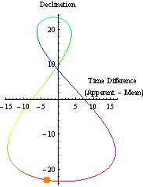
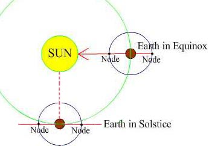
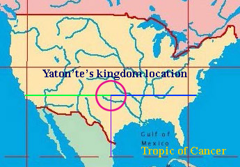
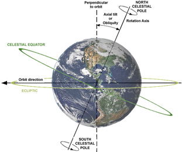
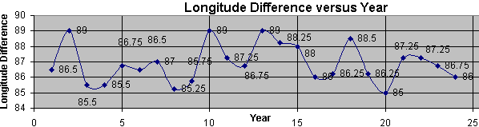

The Sacred Kosmon Year
Topics:-
- Introduction
- The Sacred Kosmon Year
- Provisional Kosmon Calendar for 2005/2006
- Early Discussion
- Solstice and the Northern Line
- Simultaneity or Autonomy?
- Calculating the place where midnight occurs at the moment of the solstice
- What to do at your Location at the Solstice Time
- 1) The Method for Simultaneous Global Celebrations
- 2) The Method for a Set Local Time of Day to Hold the Ceremony
- 3) The Method for an Autonomous, Individual Choice of Local Time to Hold the Ceremony
- Past communication
- A Last Alternative?
- In conclusion
- Questions and answers
- Background of the International Date Line
- A Biblical Septenary or Moon Phases to be the Sabbath Day?
- Midsummer
- History of the Month
- Appendix
- My Other Links
"But the time hath now come when man shall judge himself as to whether he will or will not keep any day sacred.
Moreover, man shall not, henceforth, be accountable as to whether he keep or not keep any day as a sacred day. Yet, this accountability shall be unto all men, whether they fulfill in wisdom and righteousness their utmost capacities."The Book of Judgment Ch. 35
Time is the context and content of reality at once the eternal unchanging environment of our being and its momentary ever-changing mode of expression.
Conceived absolutely it is timeless, perceived relatively it is timely.
Those that conceive of time as infinite conclude it is uncaused.
For those who say there is nothing the absolute is not, they give the title "Being, All, One".
For others whose absolute source transcends all internal distinctions within itself employ "no-thing, void, chaos".The Encyclopedia of Religion
Introduction
Oahspe set out the principles of the calendar of Kosmon in the Book of Inspiration.Because there were differing views about these it was necessary to give a resolution so that people of the world could be in accord with heaven when observing the holy days and Sabbaths.
These principles were centered on the orbit of the sun as the beginning of the year, as opposed to the count of the earth's rotation from a historical event, or a moon phase etc. Oahspe chose to distinguish the beginning of this orbit by the “northern line of the sun” (as opposed to an equinox, used by some cultures) which is interpreted as being the June solstice.
When naming the days of the year, Oahspe has said that days take their name from a count beginning from this solstice. It explained that Day 1 is the first day of the year, and Day 7 is the first Sabbath, and so on. If we are to take a literal translation of this, with Day 1 occurring immediately at the solstice moment, this implies that the dateline also falls here.
Man has chosen the midnight of the International Date Line as a fixed,
single, universal reference boundary on the globe for where the calendar
date resets.
If Day 1 were to begin only when the rotation of the earth reached the
dateline it would not start at the solstice.
So that Day 1 is recorded from the solstice moment, the dateline must be
set at the solstice midnight longitude point.
That is, the longitude of the place where midnight occurs at the
solstice moment. The chances of that ever happening at the dateline are
probably nil. So the Kosmon Calendar uses this midnight longitude point
as the dateline, from where the date of the first day is recorded.
As a consequence of this fundamental interpretation of the day count,
Oahspe predicts that “the Sabbath days all around the world shall be the
same day to all people, even with the travel of the sun”. Another
outcome of this is that not only are the Sabbath days in the same day,
the New Years Day itself, or a holy day in any religion that uses the
solstice as a dateline, can be celebrated on the same day in any country
around the world. This would be particularly important for Jews and
Muslims who live in different parts of the world, who meticulously
observe their days of worship according to a designated day.
Currently, only the International dateline longitude has the benefit of
celebrating a day on the same day around the world, and moreso, on every
day of every year.
This is clearly demonstrated for the International dateline here,
and compare this with the Kosmon New Years Day here.
This prediction is not envisioned to come by decree from a new world order but as a natural and gradual transformation, as people see the sense in it for their religious purpose. And only if the business of the world followed after, in its own time, could this be a universal change. It doesn’t meet the requirements of New Age global atunement or meditation, since this implies a simultaneous global celebration, which I have dealt with here.
________________________________________________________________________________
Detailed Explanation of the Sacred Kosmon Calendar
The Year
The etymology of "year" in West Saxon was "ȝear", in Avestan, "yare" and in Latin "annus".A calendar year is the time between two dates with the same name in a calendar.
A calendar era orders years beginning with a reference point in the past.
The reference point for the Kosmon calendar is the beginning of the seventh era of Kosmon.
A year is the orbital period of the Earth moving around the Sun. For an
observer on Earth, this corresponds to the period it takes the Sun to
complete one course throughout the zodiac along the ecliptic.
In astronomy, the Julian year is a time unit defined as exactly 365.25
day of 86,400 SI seconds each. The Julian century of 36525 days and the
Julian millennium of 365250 days are used in astronomical calculations.
Expressing a time interval in Julian years is a way to precisely specify
the number of days (not how many "real" years), for long time
intervals. The Julian year is used in the computation of the distance
covered by a light-year.
Due to the Earth's axial tilt, the course of a year sees the passing of
the seasons, marked by changes in weather, hours of daylight, and
consequently vegetation and fertility.
A calendar year is an approximation of the Earth's orbital period in a
given calendar. A calendar year in the Gregorian calendar, and Julian
calendar, has either 365 or 366 days.
A calendar year in the Kosmon calendar will be
always 365 days.
No astronomical year has an integer number of days or lunar months, so
any calendar that follows an astronomical year must have a system of
intercalation such as leap years.
The Kosmon calendar does not try to reconcile the
motions of the sun and moon by intercalation (inserting days to
compensate in solar-lunar calendars). It regards the time between June
solstices as a year, not the number of earth's rotations within it,
which has a fraction of a day to account for. The day count begins
again after the solstice. The extra quarter day has no significance in
chronology. The annual cycle of 12 or 13 months are allowed to overlap
a new year's day, and commence again at the first new moon. If the
current dateline and the 365/6 day count is replaced with a solstice
dateline at the beginning of the year, these two adjustments
give rise to a simpler, more accurate, efficient and sensible
calendar, that can accurately mark the seasons and record
chronological time in a way which is suitable and reliable for tables
of prophecy.
The ancient Roman calendar started its year on 1 March. The year used in
dates during the Roman Republic and the Roman Empire was the consular
year, which began on the day when consuls first entered office, which
was 1 January from 153 BC. In 45 BC, Julius Caesar introduced the Julian
calendar, which continued to use 1 January as the first day of the new
year. The civil year displayed its months in the order January through
December from the Roman Republican period until the present.
1 January was regarded as New Year's Day.
The First Council of Nicaea fixed the vernal equinox to 21 March in 325
AD, upon coming to agreement on a date for Easter. Although a canon of
the council implies that all churches used the same Easter, they did
not. The Church of Alexandria celebrated Easter on the Sunday after the
14th day of the moon (computed using the Metonic cycle) that falls on or
after the vernal equinox, which they placed on 21 March. The Church of
Rome regarded 25 March as the equinox and used a different cycle to
compute the day of the moon.
The Julian calendar system continued to be used until the Gregorian
calendar was introduced in 1582 to synchronise the calendar and
seasons again.
In the Julian calendar, the average length of a year was 365.25 days. A
leap year occurred every 4 years. In a non-leap year, there were 365
days, in a leap year there are 366 days. The Julian calendar assumed
time between vernal equinoxes is 365.25 days, when in fact it is about
11 minutes less. The accumulated error from 325 AD till Gregory was
about 10 days, resulting in the equinox occurring on March 11.
The Gregorian calendar modified the mean length of the calendar year
using the following rule:
Every year that is exactly divisible by four is a leap year, except for
years that are divisible by 100; the centurial years that are exactly
divisible by 400 are still leap years. For example, the year 1900 is not
a leap year; the year 2000 is a leap year.
The differentiating feature of the Gregorian calendar to the Julian
calendar is that the Gregorian omits 3 leap days every 400 years.
The Gregorian solar calendar repeats every 146,097 days, which fill 400
years (20,871 seven-day weeks). Of these there are 303 "common years" of
365 days, and 97 leap years. This gives an average calendar-year length
of exactly 365.2425 days, or 365 days, 5 hours, 49 minutes and 12
seconds.
This approximation has an error of about one day per 3300 years with
respect to the mean tropical year (365.24219 days), but less than half
this error with respect to the vernal equinox year of 365.24237 days.
With respect to both solstices the Gregorian calendar gives an average
year length that is actually shorter than the true length. The Gregorian
calendar came within 11 seconds of correctly modelling the vernal
equinox year of AD 2000, and 30 seconds of modelling the vernal equinox
year of AD 1.
This made the choice of approximation appropriate as the purpose of
creating the calendar was to ensure that the vernal equinox would be
near 21 March.
The Catholic Church maintained a lunar calendar to calculate the date of
Easter. The reckoned Moon that was used to compute Easter was fixed to
the Julian year by a 19 year cycle, so by the sixteenth century the
lunar calendar was out of phase with the real Moon by four days.
There is scope in the Kosmon calendar to use the
moon to celebrate the Passover.
The last day of the Julian calendar was Thursday, 4 October 1582 and
this was followed by the first day of the Gregorian calendar, Friday, 15
October 1582.
Denmark, which then included Norway and some Protestant states of
Germany, adopted the solar portion of the new calendar in 1700, but
decided to calculate the date of Easter astronomically using the instant
of the vernal equinox and the full moon according to Kepler's Rudolphine
Tables of 1627. They adopted the lunar portion of the Gregorian calendar
in 1776. The British Empire (including the eastern part of what is now
the United States) adopted the Gregorian calendar in 1752.
Despite the civil adoptions some Orthodox Churches use a Revised Julian
calendar, proposed in 1923 which dropped 13 days in 1923 and adopted a
different leap year rule. The Orthodox churches of Jerusalem, Russia,
Serbia, Macedonia, Georgia, Poland and the Greek Old Calendarists did
not accept the Revised Julian calendar, and continue to celebrate
Christmas in the Julian calendar, which is 7 January in the Gregorian
calendar.
Note that the Wikipedia
article from where this info comes does not mention anything
about precession.
When the article says "the Gregorian calendar attempts to keep the
vernal equinox on or soon before March 21; hence it follows the vernal
equinox year", this only settles the tropical day length problem . The
vernal equinox itself also precesses (moves backward through the
Zodiac) at the rate of 50.29 arc seconds annually.
The Binary Research
Institute tells us that, at the current precession rate of about
one degree every 71.5 years, the pole should have moved about 6
degrees since the Gregorian Calendar change (420 years ago), thereby
causing the equinox to drift about 5.9 days. This has not happened;
the equinox is stable in time after making leap adjustments.
Therefore, it was theorized that the equinox must slip about 50 arc
seconds per year along the ecliptic and the equinoctial year is only
359 degrees 59’ and 10” not 360 degrees.
Another
Wikipedia article said:
Because of precession and the earth’s elliptical orbit etc, a
reference time and direction with respect to distant stars must be
given from where to take hour angle measurements. This reference is
the vernal equinox (♈o) at noon January 1, 2000.
Using this definition, there was an equinox on March 20, 2009,
11:44:43.6 TT. The 2010 March equinox was March 20, 17:33:18.1 TT,
which gives a duration of 365d 5h 49m 30s. While the Sun moves through
the zodiac, west to east, ♈ moves in the opposite direction. When the
Sun and ♈o met at the 2010 March equinox, the Sun had moved
east 359°59'09" while ♈o had moved west 51 arcseconds for a
total of 360° (all with respect to ♈o). If a different
starting longitude for the Sun is chosen, the duration for the Sun to
return to the same longitude will be different, due to the elliptical
orbit etc.
Only the Persian
calendar, in use in Afghanistan and Iran, and
the Kosmon calendar, do not use leap years. The difference
between the two is that the Iranian calendar has its year begin on the
day of the vernal equinox as determined by astronomical computation for
the time zone of Tehran.
The Kosmon calendar year begins at the solstice
determined by astronomical computation for the solstice dateline.
Tropical (solar) year
A tropical or solar year is the length of time that the Sun takes to return to the same position from vernal equinox to vernal equinox, or from summer solstice to summer solstice. It is defined as the time required for the mean Sun's tropical longitude (longitudinal position along the ecliptic relative to its position at the vernal equinox) to increase by 360 degrees. The word "tropical" comes from the Greek tropikos meaning "turn". Thus, the tropics of Cancer and Capricorn mark the extreme north and south latitudes where the Sun can appear directly overhead, and where it appears to "turn" in its annual seasonal motion.In the 2nd century BC Hipparchus defined it as the time required for the Sun to travel from an equinox to the same equinox again. He adopted this definition because the meridian armillae was better able to detect the more rapid motion in declination at the time of the equinoxes, compared to the solstices. He also discovered that the equinoctial points moved along the ecliptic in a direction opposite that of the Sun, a phenomenon that came to be named "precession of the equinoxes". He measured the value as 1° per century, a value that was improved upon by Arabian astronomers. Since this discovery a distinction has been made between the tropical year and the sidereal year.
Long term estimates of the length of the tropical year were used in connection with the reform of the Julian calendar, which resulted in the Gregorian calendar. The reformers were unaware of the non-uniform rotation of the earth. The Gregorian calendar is a solar calendar designed to maintain synchrony with the tropical year. It has a cycle of 400 years (146,097 days). Each cycle repeats the months, dates, and weekdays. The average year length is 146,097/400 = 365+97/400 = 365.2425 days per year, a close approximation to the tropical year. The primary concern of Christians was the correct observance of Easter. The rules used to compute the date of Easter used a conventional date for the vernal equinox (March 21), and it was considered important to keep March 21 close to the actual equinox.
From the time of Hipparchus and Ptolemy, the year was based on two equinoxes or two solstices that were a number of years apart, which spread observational errors out, and averaged out the effects of nutation (irregular motions of the axis of rotation of the earth, the main cycle being 18.6 years) and the movement of the Sun caused by the gravitational pull of the planets. These effects did not begin to be understood until Newton's time. Laplace, Lagrange, and others were able to express the mean longitude of the Sun as
L0 = A0 + A1T + A2T2 days where T is the time in Julian centuries.
The inverse of the derivative of L0, dT/dL0 gives the length of the tropical year as a linear function of T. An expression giving the length of the tropical year as function of T results.
Newcomb's formula was Y = 365.24219879 - 6.14 × 10-6 T (T = 0 on January 0, 1900 mean time)
The mean tropical year, as of noon 1 January 2000 (J2000.0) was 365.2421897 or 365 days, 5 hours, 48 minutes, 45.19 seconds [A sidereal year was equal to 365.256363004 days (J2000.0)]. This changes slowly.
Using Newcomb's value for the tropical year, if the tropical year remained at its 1900 value of 365.24219878125 days the Gregorian calendar would be 3 days, 17 min, 33 s behind the Sun after 10,000 years. Also, the length of the tropical days (measured in Terrestrial Time) is decreasing at a rate of approximately 53 s per 100 tropical years. And the mean solar day is getting longer at a rate of about 1.5 ms per 100 tropical years. It was exactly 86,400 (i.e. 24 hours × 60 minutes/hour × 60 seconds/minute) SI seconds in approximately 1820. Currently, the length of a mean solar day is approximately 86400.002 SI seconds.
Solar Time
Solar time is time kept or measured by the passage of the sun, and the basis of its measurement is the sun's apparent motion along the daily course in the sky from east to west. This apparent motion is due to the daily rotation of the earth around its polar axis. Solar times can be measured by the apparent position of the Sun on the celestial sphere. Such positions are hour angles, angles expressed in time units. Apparent solar time, mean solar time, and sidereal time were recognized and measured by astronomers up to the 1950s.The length of a solar day varies throughout the year.
Apparent Solar time (or true or real solar time) is the time indicated by the Sun on a sundial (or measured by its transit over the local meridian), while mean solar time is the average as indicated by well-regulated clocks. Apparent time (sundial time) can be ahead of clock time by as much as 16 min 33 s around 3 November, or behind by as much as 14 min 6 s around 12 February. This difference is caused by two main causes.
{kind=link}
Graph showing the equation of time (red solid line)
along with its two main components plotted separately 
First, Earth's orbit is an ellipse, and its speed varies between 30.287
and 29.291 km/s according to Kepler's laws of planetary motion, and thus
the Sun appears to move faster at perihelion (currently around January 3)
and slower at aphelion a half year later. This effect increases/decreases
the real solar day by 7.9 seconds from its mean. This daily difference
accumulates over a period. As a result, the eccentricity of the Earth's
orbit contributes a sine wave variation (see curve due to the Sun's
varying speed along the ecliptic due to the eccentricity & ellipticity
of the Earth's orbit in the diagram right) with an amplitude of 7.66
minutes and a period of one year to the equation of time. The zero points
are reached at perihelion (at the beginning of January) and aphelion
(beginning of July) while the maximum values are in early April (negative)
and early October (positive). Second, due to Earth's axial tilt (obliquity of the ecliptic), the Sun moves along a great circle (the ecliptic) that is tilted to Earth's celestial equator. The projection of this motion onto the celestial equator, along which "clock time" is measured, is a maximum at the solstices, when the yearly movement of the Sun is parallel to the equator [this is visualised here] (when the axies of the sun and earth are aligned) and appears as a change in right ascension, and is a minimum at the equinoxes, when the Sun moves in a sloping direction and appears mainly as a change in declination, leaving less for the component in right ascension, which is the only component that affects the duration of the solar day. As a consequence, the daily shift of the shadow cast by the Sun in a sundial, due to obliquity, is smaller close to the equinoxes and greater close to the solstices. At the equinoxes, the Sun is seen slowing down by up to 20.3 seconds every day and at the solstices speeding up by the same amount. The inclination of the ecliptic results in the contribution of another sine wave variation (see curve due to the obliquity of the ecliptic in the diagram right) to the equation of time, with an amplitude of 9.87 minutes and a period of a half year. The zero points of this sine wave are reached at the equinoxes and solstices, while the maxima are at the beginning of February and August (negative) and the beginning of May and November (positive).

Sun position trace (analemma)
These two factors have different wavelengths, amplitudes and phases, so their combined contribution is an irregular wave called the equation of time (Click here to see an animation showing Equation of Time and Analemma path over one year). The equation of time is the difference between apparent (solar) time and mean solar time, both taken at a place (or places with the same geographical longitude) at the same instant of time, used historically to set clocks. The moment the sun passed overhead, the clock was set to noon, offset by the number of minutes given by the equation of time for that date. A second method used sidereal time.Since the middle of the first millennium BC, the diurnal rotation of the fixed stars has been used to determine mean solar time. Babylonian astronomers knew of the equation of time and were correcting for it, and sidereal time, to obtain a mean solar time. This ideal mean solar time has been used ever since then to describe the motions of the planets, Moon, and Sun.
The equation of time was tabulated as "mean minus apparent solar time" in the British Nautical Almanac and Astronomical Ephemeris published for the years 1767 onwards. Before the issue for 1834, all times in the almanac were in apparent solar time, because time aboard ship was most often determined by observing the Sun. In the Nautical Almanac issues for 1834 onwards, all times have been in mean solar time, because by then the time aboard ship was increasingly often determined by marine chronometers. A sundial can be read to an accuracy of one minute. Since the equation of time has a range of 30 minutes, the difference between sundial time and clock time cannot be ignored. In addition to the equation of time, one also has to apply corrections due to one's distance from the local time zone meridian.
The equation of time is the east-west (time) component of the analemma (shown right), a curve traced by plotting the position of the Sun as viewed from a fixed position on Earth at the same time every day for an entire year. The size and shape of the analemma is affected by obliquity, eccentricity, and the angle between the apse line (a line between an orbit's periapsis and apoapsis, for elliptical orbits or between periapsis and focus for parabolic and hyperbolic orbits) and the line of solstices. For an object with a perfectly circular orbit and no axial tilt, the Sun would always appear at the same point in the sky at the same time of day throughout the year and the analemma would be a dot. For an object with a circular orbit but axial tilt similar to Earth's, the analemma would be a figure 8 with northern and southern lobes equal in size. For an object with eccentricity similar to Earth's, but no axial tilt, the analemma would be a straight east-west line along the equator.
The vertical component of the analemma is the declination, or how far north or south from the equator the sun appears directly overhead. The horizontal component is the equation of time, or the difference between solar time and local mean time. This can be interpreted as how "fast" or "slow" the sun is compared to clock time.
The exact shape of the equation of time curve and the associated
analemma slowly changes over the centuries due to secular variations in
both eccentricity and obliquity. They increase and decrease over
hundreds of thousands of years. If the Earth's orbital eccentricity
reaches 0.047, the eccentricity effect may overshadow the obliquity
effect, leaving the equation of time curve with only one maximum and
minimum per year, as is the case on Mars.
On shorter timescales (thousands of years) the shifts of the equinox and
perihelion are more important. The former is caused by precession, and
shifts the equinox backwards compared to the stars. The shift of the
perihelion is forwards, about 1.7 days every century. In 1246 the
perihelion occurred on 22 December, the day of the solstice. At that
time the two contributing waves had common zero points, and the
resulting equation of time curve was symmetrical. Before that time the
February minimum was larger than the November maximum, and the May
maximum larger than the July minimum.
In addition to these two main effects there are others, due to lunar and
planetary perturbations, which can produce a few more seconds in the
equation of time.
Sidereal Time
The direction from the Earth to the Sun is constantly changing because the Earth revolves around the Sun, but the directions from the Earth to the distant stars do not change nearly as much. Therefore the apparent motion of the stars around the Earth has a period that is not quite the same as the 24-hour average length of the solar day.Sidereal time is a measure of the position of the Earth in its rotation around its axis, or time measured by the apparent diurnal motion of the vernal equinox, whereas Solar time is measured by the apparent diurnal motion of the sun. Diurnal motion is the apparent daily motion of stars around the celestial poles. Every star apparently moves on a circle, that is called the diurnal circle. Thus northern circumpolar stars move counterclockwise around the North Star. The average time taken for the sun to return to its highest point is 24 hours. During the time needed by the Earth to complete a rotation around its axis (a sidereal day), the Earth moves a short distance (approximately 1°) along its orbit around the sun. Therefore, after a sidereal day, the Earth still needs to rotate a small additional angular distance before the sun reaches its highest point. Because the Earth orbits the Sun once a year, the sidereal time at any one place at midnight will be about four minutes later each night, until, after a year has passed, one additional sidereal day has transpired compared to the number of solar days that have gone by. Therefore, there is one less solar day per year than there are sidereal days.
The Earth's rotational axis itself rotates about a second axis, orthogonal to the Earth's orbit (ie, about the pole of the ecliptic), causing the vernal equinox to precess in a westward direction relative to the fixed stars, taking about 25,800 years to perform a complete rotation. This is called the precession of the equinoxes. For this reason charts of the positions of the stars (their right ascension and declination) are based on a frame of reference that follows the Earth's precession (ie, relative to the vernal equinox). Sidereal time is relative to this frame. In this reference frame, Earth's rotation is close to constant, but the stars appear to rotate slowly with a period of about 25,800 years. It is also in this reference frame that the tropical year represents one orbit of the Earth around the sun. As a consequence, the sidereal day is 0.008 seconds shorter than the earth's period of rotation relative to the fixed stars.
A sidereal day is approximately 23 hours, 56 minutes, 4.091 seconds (23.93447 hours or 0.99726957 SI days), corresponding to the time it takes for the Earth to complete one rotation relative to the vernal equinox. Due to variations in the rotation rate of the Earth the rate of sidereal time deviates from civil time by a difference UTC–UT1.
Given a tropical year of 365.242190402 days this gives a sidereal day of 86,400 × 365.242190402 ÷ 366.242190402 or 86,164.09053 seconds.
Because this is the period of rotation in a precessing reference frame, it is not directly related to the mean rotation rate of the Earth in an inertial frame, which is given by ω = 2π ÷ T where T is the slightly longer stellar day given as 86,164.09890369732 seconds, and ω is the magnitude of the sidereal day corrected for precession. The period (T) of the Earth's rotation varies on hourly to interannual timescales by around a millisecond, together with a secular increase in length of day of about 2.3 milliseconds per century, mostly from tidal friction slowing the Earth's rotation.
Just as the Sun and Moon appear to rise in the east and set in the west,
so do the stars. Maps of the stars use declination and right ascension
as coordinates. These correspond to latitude and longitude respectively.
While declination is measured in degrees, right ascension is measured in
hours and minutes, because it was natural to name locations in the sky
in connection with the time they crossed the meridian. The meridian is
an imaginary line going from north to south that goes through the point
directly overhead, or the zenith. The right ascension of any object
currently crossing the meridian is equal to the current local (apparent)
sidereal time.
When sidereal time is equal to an object's right ascension, the object
will be at its highest point in the sky, or culmination, at which time
it is usually best placed for observation, as atmospheric extinction is
minimised.
Sidereal time is defined as the hour angle (angles expressed in time
units) of the vernal equinox at a locality. At the moment when the
vernal equinox crosses the local meridian, Local Apparent Sidereal Time
is 00:00. It has the same value as the right ascension of any celestial
body that is crossing the local meridian at that same moment. Greenwich
Apparent Sidereal Time (GAST) is the hour angle of the vernal equinox at
the prime meridian at Greenwich. Local Sidereal Time at any locality
differs from the Greenwich Sidereal Time value of the same moment, by an
amount that depends on the longitude of the locality. When one moves
eastward 15° in longitude, sidereal time is larger by one hour (note
that it wraps around at 24 hours).
Standard Time
Prior to the introduction of standard time, every municipality around the civilized world set its official clock according to the local position of the sun (solar time). This served adequately until faster travel over long distances required constant re-setting of timepieces. Standard time, where all clocks in a large region are set to the same time, was established to solve this problem. Chronometers or telegraphy were used to synchronize these clocks.Fleming's Standard time (1879) divided the world into twenty-four time zones, each one covering exactly 15 degrees of longitude. All clocks within each of these zones were set to the same time, but differed by one hour from those in the neighboring zones. The local time at the Royal Greenwich Observatory in Greenwich, London was chosen as standard at the 1884 International Meridian Conference, leading to the widespread use of Greenwich Mean Time (mean solar time on the meridian of Greenwich) to set local clocks. This location was chosen because by 1884 two-thirds of all charts and maps already used it as their prime meridian. By 1929 all major countries had adopted standard time zones. Political considerations have now increased the number of standard time zones to 40.
In 1928, the term Universal Time (UT) was adopted internationally as a more precise term than Greenwich Mean Time, partly as a result of ambiguities arising from the changed practice of starting the astronomical day at midnight instead of at noon.
Time can be measured based on the rotation of the Earth by observing
celestial bodies crossing the meridian every day (diurnal motion).
Astronomers have preferred observing meridian crossings of stars over
observations of the Sun because they are more accurate.
From the time of Flamsteed it was believed that the Earth's daily
rotation was uniform. From the 1600s planetary ephemerides were
calculated using time scales based on the Earth's rotation, usually the
mean solar time of observatories such as Paris or Greenwich.
Eclipse records studied in the 19th century, raised suspicions that the
rate at which Earth rotates is gradually slowing and also shows
small-scale irregularities. Ferrel in 1864 indicated the rotation of the
Earth was being retarded by tides. This also causes the mean solar day
to now extend longer than the nominal 86,400 SI seconds. In 1927 De
Sitter wrote, "the 'astronomical time', given by the earth's rotation,
differs from the 'uniform' or 'Newtonian' time, which is defined as the
independent variable of the equations of celestial mechanics". Observed
positions of the Moon, Sun and planets, when compared with their
well-established gravitational ephemerides, it was thought, should
better and more uniformly define and determine time.
Ephemeris time
(ET) was adopted in 1952 to avoid the unpredictable irregularities of
the mean solar time scale, for use in ephemerides of the Sun, Moon, and
the planets. It was intended for astronomers and scientists only, and
that mean solar time was to continue for civil purposes. Ephemeris time
was a first application of a dynamical time scale, in which time is
defined implicitly, inferred from the observed position of an
astronomical object via the dynamical theory of its motion.
It was defined in principle by the orbital motion of the Earth around
the Sun using formulae that made use of the epoch date of 1900 January 0
and of Newcomb's Tables of the Sun (1895).
The unit was the tropical year at 1900.0 instead of the sidereal year,
and the standard second was defined, from 1956 to 1967, as
1/31556925.9747 of the tropical year at 1900.0, and finally being
redefined in 1967/8 in terms of the cesium atomic clock standard.
Using Newcomb's value of the tropical year from the above
formula to be 365.24219879 [the other terms being zero for year
1900.0]
1/31556925.9747 ×
365.24219879 days × 24 hours × 602 seconds =
1.0000000000239567060684587802859 second
In the introduction to Newcomb's Tables of the Sun, the basis of the tables includes a formula for the Sun's mean longitude, at a time indicated by interval T (in Julian centuries of 36525 mean solar days) reckoned from Greenwich Mean Noon on 0 January 1900:
Ls = 279° 41' 48".04 + 129,602,768".13T +1".089T2 (1)
Spencer Jones' work of 1939 showed that the positions of the Sun
actually observed, when compared with those obtained from Newcomb's
formula, show the need for the following correction to the formula to
represent the observations:
ΔLs = + 1".00 +
2".97T + 1".23T2 +
0.0748B
where "the times of observation are in Universal time, not corrected to
Newtonian time", and 0.0748B represents an irregular fluctuation
calculated from lunar observations.
Thus a conventionally-corrected form of Newcomb's formula, to incorporate the corrections on the basis of mean solar time, would be the sum of the two preceding expressions:
Ls = 279° 41' 49".04 + 129,602,771".10T +2".32T2 +0.0748B (2)
Clemence's 1948 proposal did not adopt a correction of this kind in terms of mean solar time: instead, the same numbers were used as in Newcomb's original uncorrected formula (1), but now in a reverse sense, to define the time and time scale implicitly, based on the real position of the Sun:
Ls = 279° 41'
48".04 + 129,602,768".13E +1".089E2
(3)
where the time variable, here represented as E, now represents time in
ephemeris centuries of 36525 ephemeris days of 86400 ephemeris seconds.
The 1961 official reference put it this way: "The origin and rate of
ephemeris time are defined to make the Sun's mean longitude agree with
Newcomb's expression".
From the comparison of formulae (2) and (3), both of which express the
same real solar motion in the same real time but on different time
scales, Clemence arrived at an explicit expression, estimating the
difference in seconds of time between ephemeris time and mean solar
time, in the sense (ET-UT):
δt = + 24s.349 +
72s.3165T + 29s.949T2 +
1.821B (4)
Clemence's formula is now superseded by modern estimations. The
difference between ephemeris time and UT (ie, δt) depended on
observation.
Inspection of the formulae above shows that the (ideally constant)
ephemeris second has been for the whole of the twentieth century very
slightly shorter than the corresponding (but not precisely constant)
unit of mean solar time (which besides its irregular fluctuations tends
gradually to increase).
Ephemeris time was defined in terms of the orbital motion of the Earth
around the Sun, after a calibration of the mean motion of the Moon with
respect to the mean motion of the Sun. The reason being that the Moon
moves against the background of stars about 13 times as fast as the
Sun's corresponding rate of motion, and the accuracy of time
determinations from lunar measurements is correspondingly greater. The
cesium atomic clock was calibrated in 1958 by reference to ephemeris
time. Cesium atomic clocks running on the basis of ephemeris seconds
began to be used and kept in step with ephemeris time. The atomic clocks
proved to have a closer approximation to uniformity than the primary
standard itself.
The availability of atomic clocks, together with the increasing accuracy
of astronomical observations meant that relativistic corrections were no
longer going to be small enough to be neglected. The size of the
periodic part of the variations due to time dilation between earth-based
atomic clocks and the coordinate time of the solar-system barycentric
reference frame had been estimated at under 2 milliseconds. In 1976 the
IAU resolved that the theoretical basis for its current (1952) standard
of Ephemeris Time was non-relativistic, and that therefore, beginning in
1984, Ephemeris Time would be replaced by two relativistic timescales
intended to constitute dynamical timescales: Terrestrial Dynamical Time
(TDT) and Barycentric Dynamical Time (TDB).
qq
ET (1960 to 1983) is no longer in use, but its successor time scales,
such as TDT, as well as the atomic
time scale (TAI, Temps Atomique International), were designed with
a continuity to it.
International Atomic Time (TAI) is a high-precision atomic coordinate
time standard based on the notional passage of proper time on Earth's
geoid. It is the principal realisation of Terrestrial Time, and the
basis for Coordinated Universal Time (UTC) which is used for civil
timekeeping all over the Earth's surface. As of 2009[update], TAI was
exactly 34 seconds ahead of UTC: an initial difference of 10 seconds at
the start of 1972, plus 24 leap seconds in UTC since 1972; the last leap
second was added on 31 December 2008.[1][2]
Time coordinates on the TAI scales are conventionally specified using
traditional means of specifying days, carried over from non-uniform time
standards based on the rotation of the Earth. Specifically, both Julian
Dates and the Gregorian calendar are used. TAI in this form was
synchronised with Universal Time at the beginning of 1958, and the two
have drifted apart ever since, due to the changing motion of the Earth.
Contents [hide]
1 Operation
2 History
3 See also
4 Notes
5 References
6 External links [edit] Operation
TAI as a time scale is a weighted average of the time kept by over 200
atomic clocks in about 70 national laboratories worldwide. The clocks
are compared using satellites.[3] Due to the averaging it is far more
stable than any clock would be alone. The majority of the clocks are
caesium clocks; the definition of the SI second is written in terms of
caesium.[4]
The participating institutions each broadcast, in real time, a frequency
signal with time codes, which is their estimate of TAI. Time codes are
usually published in the form of UTC. These time scales are denoted in
the form TAI(NPL) (UTC(NPL) for the UTC form), where NPL in this case
identifies the National Physical Laboratory, UK.
The clocks at different institutions are regularly compared against each
other. The International Bureau of Weights and Measures (BIPM) combines
these measurements to retrospectively calculate the weighted average
that forms the most stable time scale possible. This combined time scale
is published monthly in Circular T, and is the canonical TAI. This time
scale is expressed in the form of tables of differences UTC-UTC(x) and
TAI-TA(x), for each participating institution x.
Errors in publication may be corrected by issuing a revision of the
faulty Circular T or by errata in a subsequent Circular T. Aside from
this, once published in Circular T the TAI scale is not revised. In
hindsight it is possible to discover errors in TAI, and to make better
estimates of the true proper time scale. Doing so does not create
another version of TAI; it is instead considered to be creating a better
realisation of Terrestrial Time (TT).
[edit] History
Atomic timekeeping services started experimentally in 1955, using the
first caesium atomic clock at the National Physical Laboratory, UK
(NPL). Early atomic time scales consisted of quartz clocks with
frequencies calibrated by a single atomic clock; the atomic clocks were
not operated continuously. The "Greenwich Atomic" (GA) scale began in
1955 at the Royal Greenwich Observatory. The United States Naval
Observatory began the A.1 scale 13 September 1956, using an Atomichron©
commercial atomic clock, followed by the NBS-A scale at the National
Bureau of Standards, Boulder, Colorado. The International Time Bureau
(BIH) began a time scale, Tm or AM, in July 1955, using both local
caesium clocks and comparisons to distant clocks using the phase of VLF
radio signals. Both the BIH scale and A.1 was defined by an epoch at the
beginning of 1958: it was set to read Julian Date 2436204.5 (1 January
1958 00:00:00) at the corresponding UT2 instant. The procedures used by
the BIH evolved, and the name for the time scale changed: "A3" in 1963
and "TA(BIH)" in 1969.[5] This synchronisation was inevitably imperfect,
depending as it did on the astronomical realisation of UT2. At the time,
UT2 as published by various observatories differed by several
centiseconds.
The SI second was defined in terms of the caesium atom in 1967, and in
1971 it was renamed International Atomic Time (TAI).[6]
Also in 1961, UTC began. UTC is a discontinuous time scale composed from
segments that are linear transformations of atomic time, the
discontinuities being arranged so that UTC approximated UT2 until the
end of 1971, and UT1 thereafter. This was a compromise arrangement for a
broadcast time scale: a linear transformation of the BIH's atomic time
meant that the time scale was stable and internationally synchronised,
while approximating UT1 means that tasks such as navigation which
require a source of Universal Time continue to be well served by public
time broadcasts.[7]
In the 1970s, it became clear that the clocks participating in TAI were
ticking at different rates due to gravitational time dilation, and the
combined TAI scale therefore corresponded to an average of the altitudes
of the various clocks. Starting from Julian Date 2443144.5 (1 January
1977T00:00:00), corrections were applied to the output of all
participating clocks, so that TAI would correspond to proper time at
mean sea level (the geoid). Because the clocks had been on average well
above sea level, this meant that TAI slowed down, by about 10-12. The
former uncorrected time scale continues to be published, under the name
EAL (Echelle Atomique Libre, meaning Free Atomic Scale).[8]
The instant that the gravitational correction started to be applied
serves as the epoch for Barycentric Coordinate Time (TCB), Geocentric
Coordinate Time (TCG), and Terrestrial Time (TT). All three of these
time scales were defined to read JD 2443144.5003725 (1 January 1977
00:00:32.184) exactly at that instant. (The offset is to provide
continuity with the older Ephemeris Time.) TAI was henceforth a
realisation of TT, with the equation TT(TAI) = TAI + 32.184 s.[9]
ET's direct successor for measuring time on a geocentric basis was
Terrestrial Dynamical Time (TDT).
Barycentric
Dynamical Time (TDB) is a relativistic coordinate time scale that
takes account of time dilation when calculating orbits and astronomical
ephemerides of planets, asteroids, comets and interplanetary spacecraft
in the Solar system. Since 2006 TDB is defined as a linear scaling of
Barycentric Coordinate Time (TCB), and is distinguished from TCB in that
TDB has small, mainly periodic, differences from Terrestrial Time (TT)
which, overall, will remain at less than 2 milliseconds for several
millennia. TDB has a solar-system-barycentric reference frame. It is now
treated as equivalent to the long-established Jet Propulsion Lab (JPL)
ephemeris time argument Teph as implemented in JPL Development Ephemeris
DE405, in use as the official basis for planetary and lunar ephemerides
in the Astronomical Almanac, editions for 2003 and succeedng years.
TDB is a specific fixed linear transformation of TCB. TCB diverges from
both TDB and TT: TCB progresses faster at a differential rate of about
0.5 second/year, while TDB and TT remain close.
TDB was to tick uniformly in a reference frame comoving with the
barycenter of the Solar system. (As with any coordinate time, a
corresponding clock, to coincide in rate, would need not only to be at
rest in that reference frame, but also (an unattainable hypothetical
condition) to be located outside all of the relevant gravity wells.) In
addition, TDB was to have (as observed/evaluated at the Earth's
surface), over the long term average, the same rate as TDT (now TT). TDT
and TDB were defined in a series of resolutions at the same 1976 meeting
of the International Astronomical Union.
In 1976, two new time scales were defined to take account of relativity.
ET was replaced by Terrestrial Dynamical Time (TDT) for measuring time
at the Earth's surface, and Barycentric
Dynamical Time (TDB) superseded ET for planetary ephemerides. The
reference frame for TDB is the barycenter of the Solar system. To
coincide in rate, the corresponding clock for this coordinate time
system needs to be at rest in this reference frame, and to be located
outside all of the relevant gravity wells (an unattainable hypothetical
condition). In addition, TDB was to have (as observed/evaluated at the
Earth's surface), over the long term average, the same rate as TDT.
It was eventually realized that TDB was not well defined because it was
not accompanied by a general relativistic metric and because the exact
relationship between TDB and TDT had not been specified. (It was also
later criticized as being not physically possible in exact accordance
with its original definition: among other things the 1976 definition
excluded a necessary small offset for the initial epoch of 1977.)[10]
After the difficulties were appreciated, in 1991 the IAU refined the
official definitions of timescales by creating additional new time
scales: Barycentric Coordinate Time (TCB) and Geocentric Coordinate Time
(TCG). TCB was intended as a replacement for TDB, and TCG was its
equivalent for use in near-Earth space. TDT was also renamed to
Terrestrial Time (TT), because of doubts raised about the
appropriateness of the word "dynamical" in that connection.
[edit] Use of TDB
TDB is a successor of Ephemeris Time (ET), in that ET can be seen
(within the limits of the lesser accuracy and precision achievable in
its time) to be an approximation to TDB as well as to Terrestrial Time
(TT) (see Ephemeris time - Implementations). TDB in the form of the very
closely analogous, and practically equivalent, time scale Teph continues
to be used for the important DE405 planetary and lunar ephemerides from
the Jet Propulsion Laboratory.
Arguments have been put forward for the continued practical use of TDB
rather than TCB based on the very small size of the difference between
TDB and TT, not exceeding 0.002 second, which can be neglected for many
applications. It has been argued that the smallness of this difference
makes for a lower risk of damage if TDB is ever confused with TT,
compared to the possible damage of confusing TCB and TT, which have a
relative linear drift of about 0.5 second per year,[11] (the difference
was close to zero at the start of 1977, and is now (2009) over a
quarter-minute, increasing
[28] Difficulties were recognized, which led to these being in turn
superseded in the 1990s by time scales Terrestrial Time (TT), Geocentric
Coordinate Time GCT(TCG) and Barycentric Coordinate Time BCT(TCB).[16]
[edit] JPL ephemeris time argument Teph
High-precision ephemerides of sun, moon and planets were developed and
calculated at the Jet Propulsion Laboratory (JPL) over a long period,
and the latest available were adopted for the ephemerides in the
Astronomical Almanac starting in 1984. Although not an IAU standard, the
ephemeris time argument Teph has been in use at that institution since
the 1960s. The time scale represented by Teph has been characterized as
a relativistic coordinate time that differs from Terrestrial Time only
by small periodic terms with an amplitude not exceeding 2 milliseconds
of time: it is linearly related to, but distinct (by an offset and
constant rate which is of the order of 0.5 sec/yr) from the TCB time
scale adopted in 1991 as a standard by the IAU. Thus for clocks on or
near the geoid, Teph (within 2 milliseconds), but not so closely TCB,
can be used as approximations to Terrestrial Time, and via the standard
ephemerides Teph is in widespread use.[4]
[edit] Use of ephemeris time in official almanacs and ephemerides
Ephemeris time based on the standard adopted in 1952 was introduced into
the Astronomical Ephemeris (UK) and the American Ephemeris and Nautical
Almanac, replacing UT in the main ephemerides in the issues for 1960 and
after.[29] (But the ephemerides in the Nautical Almanac, by then a
separate publication for the use of navigators, continued to be
expressed in terms of UT.) The ephemerides continued on this basis
through 1983 (with some changes due to adoption of improved values of
astronomical constants), after which, for 1984 onwards, they adopted the
JPL ephemerides.
Previous to the 1960 change, the 'Improved Lunar Ephemeris' had alrady
been made available in terms of ephemeris time for the years
1952-1959[30] (computed by W J Eckert from Brown's theory with
modifications recommended by Clemence (1948)).
[edit] Redefinition of the second
Successive definitions of the unit of ephemeris time are mentioned above
(History). The value adopted for the 1956/1960 standard second:
the fraction 1/31,556,925.9747 of the tropical year for 1900 January 0
at 12 hours ephemeris time.
was obtained from the linear time-coefficient in Newcomb's expression
for the solar mean longitude (above), taken and applied with the same
meaning for the time as in formula (3) above. The relation with
Newcomb's coefficient can be seen from:
1/31,556,925.9747 = 129602768.13 / (360×60×60×36525×86400).
Caesium atomic clocks became operational in 1955, and quickly confirmed
the evidence that the rotation of the earth fluctuated randomly. This
confirmed the unsuitability of the mean solar second of Universal Time
as a measure of time interval for the most precise purposes. After three
years of comparisons with lunar observations, Markowitz et al. (1958)
determined that the ephemeris second corresponded to 9,192,631,770 ± 20
cycles of the chosen cesium resonance.[17]
Following this, in 1967/68, the General Conference on Weights and
Measures (CGPM) replaced the definition of the SI second by the
following:
The second is the duration of 9?192?631?770 periods of the radiation
corresponding to the transition between the two hyperfine levels of the
ground state of the caesium 133 atom.
Although this is an independent definition that does not refer to the
older basis of ephemeris time, it uses the same quantity as the value of
the ephemeris second measured by the cesium clock in 1958. This SI
second referred to atomic time was later verified by Markowitz (1988) to
be in agreement, within 1 part in 1010, with the second of ephemeris
time as determined from lunar observations.[18]
For practical purposes the length of the ephemeris second can be taken
as equal to the length of the second of Barycentric Dynamical Time (TDB)
or Terrestrial Time (TT) or its predecessor TDT.
The difference between ET and UT is called ?T; it changes irregularly,
but the long-term trend is parabolic, decreasing from ancient times
until the nineteenth century,[22] and increasing since then at a rate
corresponding to an increase in the solar day length of 1.7 ms per
century (see leap seconds).
International Atomic Time (TAI) was set equal to UT2 at 1 January 1958
0:00:00 . At that time, ?T was already about 32.18 seconds. The
difference between Terrestrial Time (TT) (the successor to ephemeris
time) and atomic time was later defined as follows:
1977 January 1.0003725 TT = 1977 January 1.0000000 TAI, i.e.
ET - TAI = 32.184 seconds
This difference may be assumed constant—the rates of TT and TAI are
designed to be identical.
In 1991 the IAU refined the official definitions of timescales by
creating additional new time scales: Barycentric Coordinate Time (TCB)
and Geocentric Coordinate Time (TCG). TCB was intended as a replacement
for TDB, and TCG was its equivalent for use in near-Earth space. TDT was
also renamed to Terrestrial Time (TT).
Deficiencies were found in the definition of TDB (though not affecting
Teph), and these led to the IAU defining and recommending further time
scales, TCB for use in the solar system as a whole, and TCG for use in
the vicinity of the Earth. As defined, TCB (as observed from the Earth's
surface) is of divergent rate relative to all of ET, Teph and TDT/TT;[7]
and the same is true, to a lesser extent, of TCG. The ephemerides of
sun, moon and planets in current widespread and official use continue to
be those calculated at the Jet Propulsion Laboratory (updated as from
2003 to DE405) using as argument Teph. As UT is slightly irregular in
its rate, astronomers introduced Ephemeris Time, which has since been
replaced by Terrestrial Time (TT). However, because Universal Time is
synchronous with night and day, and more precise atomic-frequency
standards drift away from this, UT is still used to produce a correction
called leap seconds to atomic time to obtain a broadcast form of civil
time that carries atomic frequency. Thus, civil broadcast standards for
time and frequency are a compromise that usually follows International
Atomic Time (TAI), but occasionally jumps in order to prevent it from
drifting too far from mean solar time. Terrestrial Time is TAI + 32.184
s.
UT0 is the rotational time of a particular place of observation. It is observed as the diurnal motion of stars or extraterrestrial radio sources. UT1 is computed by correcting UT0 for the effect of polar motion on the longitude of the observing site. It varies from uniformity because of the irregularities in Earth's rotation. Terrestrial Dynamic Time (TDT) replaced Ephemeris Time and maintained continuity with it. TDT is a uniform atomic time scale, whose unit is the SI second. TDT is tied in its rate to the SI second, as is International Atomic Time (TAI), but because TAI was somewhat arbitrarily defined at its inception in 1958 to be initially equal to a refined version of UT, TT is offset from TAI, by a constant 32.184 seconds. The offset provided a continuity from Ephemeris Time to TDT. TDT has since been redefined as Terrestrial Time (TT). Barycentric Dynamical Time (TDB) is similar to TDT but includes relativistic corrections that move the origin to the barycenter. TDB differs from TT only in periodic terms. The difference is at most 2 milliseconds. In 1991, in order to clarify the relationships between space-time coordinates, new time scales were introduced, each with a different frame of reference. Terrestrial Time is time at Earth's surface. Geocentric Coordinate Time is a coordinate time scale at Earth's center. Barycentric Coordinate Time is a coordinate time scale at the center of mass of the solar system, which is called the barycenter. Barycentric Dynamical Time is a dynamical time at the barycenter. Terrestrial Time (TT) is the time scale which had formerly been called Terrestrial Dynamical Time. It is now defined as a coordinate time scale at Earth's surface. Geocentric Coordinate Time (TCG) is a coordinate time having its spatial origin at the center of Earth's mass. TCG is linearly related to TT as: TCG - TT = LG * (JD -2443144.5) * 86400 seconds, with the scale difference LG defined as 6.969290134e-10 exactly. Barycentric Coordinate Time (TCB) is a coordinate time having its spatial origin at the solar system barycenter. TCB differs from TT in rate and other mostly periodic terms. Neglecting the periodic terms, in the sense of an average over a long period of time the two are related by: TCB - TT = LB * (JD -2443144.5) * 86400 seconds. According to IAU the best estimate of the scale difference LB is 1.55051976772e-08. [edit] Constructed time standards International Atomic Time (TAI) is the primary international time standard from which other time standards, including UTC, are calculated. TAI is kept by the BIPM (International Bureau of Weights and Measures), and is based on the combined input of many atomic clocks around the world, each corrected for environmental and relativistic effects. It is the primary realisation of Terrestrial Time. Coordinated Universal Time (UTC) is an atomic time scale designed to approximate Universal Time. UTC differs from TAI by an integral number of seconds. UTC is kept within 0.9 second of UT1 by the introduction of one-second steps to UTC, the "leap second". To date these steps have always been positive. Standard time or civil time in a region deviates a fixed, round amount, usually a whole number of hours, from some form of Universal Time, now usually UTC. The offset is chosen such that a new day starts approximately while the sun is at the nadir. See Time zone. Alternatively the difference is not really fixed, but it changes twice a year a round amount, usually one hour, see Daylight saving time. [edit] Other time scales Julian day number is a count of days elapsed since Greenwich mean noon on 1 January 4713 B.C., Julian proleptic calendar. The Julian Date is the Julian day number followed by the fraction of the day elapsed since the preceding noon. Conveniently for astronomers, this avoids the date skip during an observation night. Modified Julian day (MJD) is defined as MJD = JD - 2400000.5. An MJD day thus begins at midnight, civil date. Julian dates can be expressed in UT, TAI, TDT, etc. and so for precise applications the timescale should be specified, e.g. MJD 49135.3824 TAI.
Time scales
The expression "Universal Time" is ambiguous, as there are several versions of it, the most commonly used being UTC and UT1. All of these versions of UT are based on the rotation of the earth compared to distant celestial objects, but with a scaling factor and other adjustments to make them closer to solar time.UT0 is Universal Time determined at an observatory by observing the diurnal motion of stars or extragalactic radio sources, and also from ranging observations of the Moon and artificial Earth satellites. The displacement of Earth's geographic pole from its rotational pole is not taken into account. This displacement, called polar motion, causes the geographic position of any place on Earth to vary by several meters, and different observatories will find a different value for UT0 at the same moment. It is thus not Universal.
UT1 is the principal form of Universal Time. While conceptually it is mean solar time, precise measurements of the Sun are difficult. Hence, it is computed from observations of distant quasars using Very Long Baseline Interferometry (VLBI), laser ranging of the Moon and artificial satellites as well the determination of GPS satellite orbits. UT1 is the same everywhere on Earth, and is proportional to the rotation angle of the Earth with respect to distant quasars, specifically, the International Celestial Reference Frame (ICRF), neglecting some small adjustments. The International Celestial Reference Frame (ICRF) is a quasi-inertial reference frame centered at the barycenter of the Solar System, defined by the measured positions of 212 extragalactic sources (mainly quasars). The extragalactic sources used to define the ICRF are so far away that any angular motion is essentially zero. The ICRF is now the standard reference frame used to define the positions of the planets (including the Earth) and other astronomical objects.
The observations allow the determination of a measure of the Earth's angle with respect to the ICRF, called the Earth Rotation Angle (ERA, which serves as a modern replacement for Greenwich Mean Sidereal Time). UT1 is required to follow the relationship
ERA = 2p(0.7790572732640 + 1.00273781191135448Tu) radians
where Tu = (Julian UT1 date - 2451545.0)[2]
UT1R is a smoothed version of UT1, filtering out periodic variations due to tides. It includes 62 smoothing terms, with periods ranging from 5.6 days to 18.6 years.[3] UT2 is a smoothed version of UT1, filtering out periodic seasonal variations. It is mostly of historic interest and rarely used anymore. It is defined by the equation: where t is the time as fraction of the Besselian year. [4] UT2R is a smoothed version of UT1, incorporating both the seasonal corrections of UT2 and the tidal corrections of UT1R. It is the most smoothed form of Universal Time. Its non-uniformities reveal the unpredictable components of Earth rotation, due to atmospheric weather, plate tectonics, and currents in the interior of the Earth. UTC (Coordinated Universal Time) is an atomic timescale that approximates UT1. It is the international standard on which civil time is based. It ticks SI seconds, in step with TAI. It usually has 86400 SI seconds per day, but is kept within 0.9 seconds of UT1 by the introduction of occasional intercalary leap seconds. As of 2008[update] these leaps have always been positive, with a day of 86401 seconds. When an accuracy better than one second is not required, UTC can be used as an approximation of UT1.
Meridians and the International Date Line
A meridian is a line on the surface of Earth that extends from pole to pole. Meridians of longitude are placed every hour (15°) and give an indication of local time at each meridian. The Prime Meridian is defined to be 0°. The International Date Line is an imaginary line on the surface of the Earth opposite the Prime Meridian (Greenwich, England). It is roughly along the 180th meridian at 180°, but drawn with diversions to pass around some territories and island groups. Together with Prime Meridian it forms a great circle that divides the Earth into the Eastern and Western Hemispheres.The term Universal Time (UT), sometimes referred to as Greenwich Mean Time (GMT), is used to refer to time kept on the Greenwich meridian (longitude zero). Different designations of Universal Time have been adopted. In astronomical and navigational usage, UT refers to UT1, which is a measure of the rotation angle of the Earth as observed astronomically. It is affected by small variations in the rotation of the Earth. In civil usage, UT refers to Coordinated Universal Time (UTC). This time scale is determined using atomic clocks. So UT1 is determined by the rotation of the Earth, whereas UTC is a human invention. UTC (civil time) is not permitted to differ from UT1 (Earth's time) by more than 0.9 second so a leap second is introduced into UTC. This occurs on average about once every year to a year and a half.
Just as a single and universal reference for time that is valid for all points on the globe at the same moment became necessary, so the International Date Line was necessary in order to have a fixed, albeit arbitrary, boundary on the globe where the calendar date resets. In practice, the Change-Date Line moves around the globe as the midnight time line (2400 hours local time), the moment at which the date changes to the next day at each point on the globe. The International Date Line has always been an artificial construct of cartographers. No international organization nor any treaty between nations has fixed its line segments. All nations unilaterally determine their standard time zones.
Both the Date Line and Universal Time are Arbitrary
Confusion as to which day the Kosmon new years day was in for any country is summed up by an early message by an Oahspe group member:"Regarding split days, where the solstice moment falls after midnight one part of the world, and before midnight on another, this indicates the need for an agreed upon Universal Time reference point which I believe is somewhat arbitrary."
{kind=link}
Time zone Map showing how the designated time zone areas
give a jumbled representation of local sun time.
The ceaseless cycle of a 24 hour day, beginning with midnight, then dawn,
noon and sunset does not mysteriously have a breach at a dateline. The day
cycle is the same and complete in any geographical area of the world,
including at the dateline, whether for the Kosmon Calendar dateline, or
the current International dateline, unless artificial time zones distort
the process somewhat (see diagram). As the highlighted phrase above tells
us, a calendar day changes from one date to the next at midnight,
regardless of whether the place is at the dateline or anywhere else on the
planet. Confusion as to which day an event is in for another country is not to do with a dateline, but when a day begins or ends in one time zone relative to another. Comparing time differences at various longitudes [which is comparable to comparing time differences at various time zones] is done the same way whether or not there is a dateline.
The choice of the dateline is arbitrary, save for the convenience of being on the meridian opposite the royal observatory at Greenwich, and in the Pacific Ocean. An artificial dateline that divides a time zone throws into confusion the dates to either side of the line in this zone. The central Pacific Republic of Kiribati was divided by the date line before 1995. Upon independence in 1979, the new republic found itself straddling the date line. Government offices on opposite sides of the line could only communicate by radio or telephone on the four days of the week when both sides experienced weekdays simultaneously. So the dateline, being largely in the sea, affects the least amount of local population.
The Prime Meridian is also arbitrarily defined to be 0° at Greenwich. So
we might consider setting both the International Dateline and the
Universal Time reference (UT) to the solstice moment point, they then
simultaneously become the universal commencement of the year and the UT.
Since the world of business and trade has a complex network of global
times referenced to Greenwich, this couldn’t happen while we lived in a
secular world. Since religions often are not caught up in this, having
another purpose, these global complications, they would initially set
the environment for such a change, if that were the direction of
humanity. This means the UT is recalculated each year. Although this
doesn’t matter much to us, it is inconvenient as a universal time
reference. By having a trial run we will eventually find the original
need for a fixed universal time reference.
It is necessary for maps to set a prime meridian which is fixed.
Should the world ever adopt our system, in addition it would need to
adopt a fixed prime meridian as a universal time reference, but
repositioned to a location which is more fitting to the times, if and
when a transformation might arise. The floating dateline will be
calculated from this as I set out here.
But the solstice, and therefore the dateline changes position from year
to year in the Kosmon calendar, and often passes through major
population areas.
Since the Kosmon calendar keeps a tally of days from the solsticeset
'Universal Time reference' (UT) is arbitrary. Any other reference can
serve the same function. If we set International Dateline to the
solstice moment point, and it becomes the universal commencement of the
current year, it will need to be reset each year,
because the moment of solstice point occurs about a quarter of a
revolution further each year.
, which is arbirarily set at Greenwich (London),
And more recently by another group member:
"the only thing a time zone does is to more or less average out when
exactly the midnight hour is for that geographical area within the
standard time zone." Moreso,
7) The dateline would be reset each year to that place which is at the start of the day [in this proposal it is defined as midnight] The position of current time zones would not be affecting.
But the day of the New Year can now be celebrated around the world on
the same day and date. Currently it can fall on June 20th
or 21st with respect to Greenwich. But with the Kosmon
calendar the date will always begin at the solstice, since this becomes
the dateline. This is proven here. The system of
months and their numbering of days is different, but that only involves
a simple conversion.
1) The northern line applies to both the northern
and southern hemispheres as a global marker for the New Year.
The day on which the sun reaches the northern line occurs on the same
day for both the northern and southern hemispheres. By selecting the
northern line Oahspe is not ambiguous. Speculation about the Southern
hemisphere Faithists having
opposite times to those in the North is unfounded. The northern line
applies to both the northern and southern hemispheres as a global marker
for the New Year. The day on which the sun reaches the northern line
occurs on the same day for both the northern and southern hemispheres as
explained below.
Because of the requirement to have all peoples celebrate the Holy days in one day, and for the weekly Sabbath day to be specified at any location around the globe on the same day we are guided to make the moment when the sun reaches the Northern Line (the tropic of Cancer) our universal time reference. The fact that this moment varies from year to year makes no difference to normal life, and in practice can be ignored by all.
When the question is asked which day of the week is the Sabbath, the
answer becomes clear on the following chart.
The time of the first Sabbath, the 'Most Holy Sabbath' or Old Years Day
will always be midnight at places along this longitude. I have given
current dates in UT (at Greenwich) at the moon phases so that you can
work out which days the Sabbaths etc. fall on using the current
calendar. Depending on where the first midnight falls, the day might be
different to the current calendar.
The moon phase times given in the Kosmon Calendar table below are in UKT (Universal Kosmon Time). Moon times are normally given in Greenwich time (UT), but to align the moon phases correctly into the Kosmon calendar we need to convert the times of the phase back from UT to UKT. This is done simply by subtracting the time difference between the new dateline and Greenwich.
The time of the June 21st 2005 solstice was at 06:46
Greenwich time.
For the New Moon of July 6 2005, the New Moon occurs at 12:02 AM
We subtract 6:46 to get 5:16 AM
Times of the Phases of the Moon are obtained at the U.S. Naval
Observatory (USNO) website. See Phases
of the Moon

8) In any epoch the solstice occurs when the line of intersection of the solar plane with the celestial plane (in other words the line between the two nodes) is perpendicular to the Sun (during the equinox this line points to the sun, as in the diagram). This is the moment when the sun reaches the Northern Line (Tropic of Cancer). Of the 360 degrees of possible longitudes that will come to face the sun (to become High Noon in turn) as the earth rotates on its axis within the period of one earth's day, there is one longitude which exactly faces the sun at High Noon at the moment of solar alignment. The sun's axis is then parallel to the earth's axis (vertically aligned even though the axis still tilts away from the sun) so all locations along this longitude exactly face the sun at High Noon.
Diagram showing the line between the two nodes pointing
to the sun
during the equinox and perpendicular to it during the solstice.
At this exact moment the "main stations" or colures
of the sky are in the four cardinal directions of the celestial landscape
(as they will be for the other longitudes when they come into High Noon),
marked by the equinoxes (the places where the ecliptic cuts the celestial
equator) resting on the east and west horizons. The time when this happens
is signalled by the vertical alignment (in other words the time when they
align on the meridian) of the pole of the ecliptic with the north star
[celestial pole]. This first time and place to come into alignment marks
the start of the first day of the Faithist Sacred Year, the hours of which
begin at the earlier midnight of this High Noon.
Therefore the universal Old Year's day celebration would begin at High Noon on the day at any place around the world on its first local midnight after midnight at the new dateline is reached. The same applies to the Sabbath days of the year. As the sun goes around the sky and each location's dawn moves with it, each respective Old Year's Day rises at midnight with the turning of the earth. Its then when the holy day begins for each location. This is how "it shall come to pass that the Sabbath days all around the world shall be the same day unto all people, even with the travel of the sun."
With the entrance of Earth into the Arc of Kosmon (the new epoch),
Oahspe indirectly sites faithists to be 'Children of One Great Spirit'
in the 'Dawn of Kosmon', the culmination of Man's growth when he gathers
in and brings the development of all previous cycles into balance, which
ultimately ushers in world peace and heaven on earth forever more, in
unity and concord with the higher realms of the after life.
This event is marked by a major galactic
alignment implied in the mystery of its cycles and cosmological
calendar written in the sky.
Provisional Kosmon Calendar for 2005/2006
Last Month for Old Year
| 1. New Moon 21:06 [15:09] June 6 | 2. | 3. | 4. | 5. | 6. | 7. |
| 8. | 9. First Quarter 0:33 [18:36] June 14 | 10. | 11. | 12. | 13. | 14. |
| 15. | 16. June 21 Full Moon 21:28 |
New Dateline 101.5° West of Greenwich |
Midnight near Denver, Colorado |
06:46 Greenwich time |
|
Most Holy Sabbath Old Years Day |
Start of the New Year
| 17. June 22 New Years Day |
18. | 19. | 20. | 21. | 22. | 23. Sabbath Last Quarter 11:37 June 28 |
| 24. | 25. | 26. | 27. | 28. | 29. | 30. Sabbath |
First month
| 1. New Moon 5:16 July 6 | 2. | 3. | 4. | 5. | 6 | 7 Sabbath |
| 8. | 9. First Quarter 8:34 July 14 |
10. | 11. | 12. | 13. | 14. Sabbath |
| 15. | 16. Full Moon 4:59 July 21 | 17. | 18. | 19. | 20. | 21. Sabbath |
| 22. Last Quarter 20:33 July 27 | 23. | 24. | 25. | 26. | 27. | 28. Sabbath |
| 29. | ||||||
Second month
| |
1. New Moon 20:19 Aug. 4 | 2. | 3. | 4. | 5. | 6. Sabbath |
| 7. | 8. | 9. First Quarter 19:52 Aug 12 | 10. | 11. | 12. | 13. Sabbath |
| 14. | 15. | 16. Full Moon 11:17 Aug 19 | 17. | 18. | 19. | 20. Sabbath |
| 21. | 22. | 23. Last Quarter 8:32 Aug 26 | 24. | 25. | 26. | 27. Sabbath |
| 28. |
Third month
| |
1. New Moon 11:59 Sept. 3 |
2. | 3. | 4. | 5. | 6. Sabbath |
| 7. | 8. | 9. First Quarter 4:51 Sept. 11 |
10. | 11. | 12. | 13. Sabbath |
| 14. | 15. Full Moon 23:55 Sept. 17 |
16. | 17. | 18. | 19. | 20. Sabbath |
| 21. | 22. Last Quarter 23:55 Sept. 24 |
23. | 24. | 25. | 26. | 27. Sabbath |
| 28. | 29. | 30. |
Fourth month
| |
|
|
1. New Moon 3:42 Oct. 3 |
2. | 3. | 4. Sabbath |
| 5. | 6. | 7. | 8. First Quarter 12:15 Oct. 10 |
9. | 10. | 11. Sabbath |
| 12. | 13. | 14. | 15. Full Moon 5:28 Oct. 17 |
16. | 17. | 18. Sabbath |
| 19. | 20. | 21. | 22. Last Quarter 18:31 Oct. 24 |
23. | 24. | 25. Sabbath |
| 26. | 27. | 28. | 29. |
Fifth month
| |
|
|
|
1. New Moon 18:38 Nov. 1 |
2. | 3. Sabbath |
| 4. | 5. | 6. | 7. | 8. First Quarter 19:11 Nov. 8 |
9. | 10. Sabbath |
| 11. | 12. | 13. | 14. | 15. Full Moon 18:11 Nov. 15 |
16. | 17. Sabbath |
| 18. | 19. | 20. | 21. | 22. | 23. Last Quarter 15:25 Nov. 23 |
24. Sabbath |
| 25. | 26. | 27. | 28. | 29. | 30. |
Sixth month
| |
|
|
|
|
|
1. Sabbath New Moon 8:15 Dec. 1 |
| 2. | 3. | 4. | 5. | 6. | 7. | 8. Sabbath First Quarter 2:50 Dec. 8 |
| 9. | 10. | 11. | 12. | 13. | 14. | 15. Sabbath Full Moon 9:29 Dec. 15 |
| 16. | 17. | 18. | 19. | 20. | 21. | 22. Sabbath |
| 23. Last Quarter 12:50 Dec. 23 |
24. | 25. | 26. | 27. | 28. | 29. Sabbath |
Seventh month
| 1. New Moon 20:26 Dec. 30 |
2. | 3. | 4. | 5. | 6. | 7. Sabbath |
| 8. First Quarter 12:10 Jan. 6 |
9. | 10. | 11. | 12. | 13. | 14. Sabbath |
| 15. | 16. Full Moon 3:02 Jan. 14 |
17. | 18. | 19. | 20. | 21. Sabbath |
| 22. | 23. | 24. Last Quarter 8:28 Jan. 22 |
25. | 26. | 27. | 28. |
| 29. | 30. |
Eighth month
| |
|
1. New Moon 7:29 Jan. 29 |
2. | 3. | 4. | 5. Sabbath |
| 6. | 7. First Quarter 23:43 Feb. 4 |
8. | 9. | 10. | 11. | 12. Sabbath |
| 13. | 14. | 15. Full Moon 21:58 Feb. 12 |
16. | 17. | 18. | 19. Sabbath |
| 20. | 21. | 22. | 23. | 24. Last Quarter 0:31 Feb. 21 |
25. | 26. Sabbath |
| 27. | 28. | 29. |
Nineth month
| |
|
|
1. New Moon 17:45 Feb. 27 |
2. | 3. | 4. Sabbath |
| 5. | 6. | 7. | 8. First Quarter 13:30 Mar. 6 |
9. | 10. | 11. Sabbath |
| 12. | 13. | 14. | 15. | 16. Full Moon 16:49 Mar. 14 |
17. | 18. Sabbath |
| 19. | 20. | 21. | 22. | 23. | 24. Last Quarter 12:24 Mar. 22 |
25. Sabbath |
| 26. | 27. | 28. | 29. | 30. |
Tenth month
| |
|
|
|
|
1. New Moon 3:29 Mar. 29 |
2. Sabbath |
| 3. | 4. | 5. | 6. | 7. | 8. First Quarter 5:15 April 5 |
9. Sabbath |
| 10. | 11. | 12. | 13. | 14. | 15. | 16. Sabbath Full Moon 9:54 April 13 |
| 17. | 18. | 19. | 20. | 21. | 22. | 23. Sabbath Last Quarter 20:42 April 20 |
| 24. | 25. | 26. | 27. | 28. | 29. |
Eleventh month
| |
|
|
|
|
|
1. Sabbath New Moon 12:58 April 27 |
| 2. | 3. | 4. | 5. | 6. | 7. | 8. Sabbath First Quarter 22:27 May 4 |
| 9. | 10. | 11. | 12. | 13. | 14. | 15. Sabbath |
| 16. | 17. Full Moon 0:05 May 13 |
18. | 19. | 20. | 21. | 22. Sabbath |
| 23. | 24. Last Quarter 2:35 May 20 |
25. | 26. | 27. | 28. | 29. Sabbath |
Twelfth month
| 1. New Moon 22:40 May 26 |
2. | 3. | 4. | 5. | 6. | 7. Sabbath |
| 8. | 9. First Quarter 16:20 June 3 |
10. | 11. | 12. | 13. | 14. Sabbath |
| 15. | 16. | 17. Full Moon 11:17 June 11 |
18. | 19. | 20. | 21. Sabbath |
| 22. | 23. | 24. Last Quarter 7:22 June 18 |
25. | 26. | 27. June 21 2006 |
Most Holy Sabbath Old Years Day |
Start of the New Year
| 28. June 22 New Years Day |
|
New Dateline 173.5° East of Greenwich |
Midnight near Nelson, N. Zealand |
12:26 Greenwich time |
29. | 30. Sabbath |
First month of the New Year
| 1. New Moon 3:39 [9:19] June 25 |
2. | 3. | 4. | 5. | 6. | 7. Sabbath |
| 8. | 9. First Quarter 4:11 [9:51] July 3 |
10. | 11. | 12. | 13. | 14. Sabbath |
| 15. | 16. Full Moon 14:36 [20:16] July 10 | 17. | 18. | 19. | 20. | 21. Sabbath |
| 22. | 23. Last Quarter 6:47 [21:45] July 17 | 24. | 25. | 26. | 27. | 28. Sabbath |
| 29. |
I suggest that the Days of the week be dedicated to the Chiefs of the
Etherean hosts of Dan'ha, so as to remember the order of Man's cycles.
1 Sethantes - establishment
2 Apollo - Physical improvement
3 Thor -
4 Osire - Corporeal knowledge
5 Fragapatti -
6 Cpenta-Armij
7 Lika
Steven's response to an early query (some years ago):
This is an old sore to some Oahspeans and have divided them to a certain
extent in the past. The 1882 edition says its the summer solstice, the
1892 version says its the winter solstice, the English version says that
old years day is in the winter. It depends on which book you prefer or
which book you read first or where you want the old/new years day to be.
Which book is correct? The original? Or the ones that came at a latter
time? Did the angels make a mistake on the first draft and had to
correct it later? These are the arguments... you have to judge for
yourself.
An Excerpt of Joan Greer's Clarification:
Much has been written in the past 30 or so years over the editing which
was done to the 1882 Edition of OAHSPE. The 1891 Edition is the result
of the editing to the 1882 Edition. The Wing Anderson Edition and the
English Edition are in essence the 1891 Edition. There is no reason here
to go into these various editing changes which omitted some valuable
information. The editing of particular interest in the discussion of the
New Year is the editing changes made in Book of Inspiration in the
chapters dealing with the holidays given to us in Guatama. We will look
in particular at Chapter XIV. In the 1882 Edition the verses in question
are as follows:
2. The northern line of the sun
shall be the end of the year, and it shall be called the last day
of the old year, saith Jehovih.
3. And the first day thereafter, when the sun starteth on his
southern course, shall be the beginning of the year, and it shall
be called the new year's day.
(This is quoted from an actual 1882 Edition)
This was changed in the 1891 to read as follows:
2. The shortest day on the northern line of the sun shall be the end
of the year, and shall be called old year's day, saith Jehovih.
3. And the first day thereafter, when the sun on his southern course
starteth towards the north, shall be the beginning of the year, and
shall be called new year's day.
(This is quoted from the English Edition)
When you study these two quotes, it becomes clear that the meaning of "the northern line" holds the key. In the 1882 Edition, the northern line is a place the sun reaches; in the 1891 the northern line is the line the sun travels from the north to the south.
The following quote is the same in all editions of OAHSPE, and explains the Northern Line of the sun. Book of Fragapatti, Son of Jehovih, Chapter XIX.

1. A thousand miles north of the northern line of the sun on the earth, in the middle betwixt the east and west front of North Guatama, and from the earth upward, and without intervening space, five hundred miles, had Yaton'te founded his kingdom.
This would mean that the 1882 Edition is consistent with the explanation of the Northern Line being the line the sun reaches at the Summer Solstice, and Summer Solstice is the sky mark for the Old Year/New Year.
[End of Quote]
Yatonte's kingdom location marked by the pink circle. Its near Chickasha, which is near Oklahoma City. The purple line represents 1000 miles from the Tropic of Cancer. Perpendicular to this, the blue and green lines are of equal length with ends at the edges of the continent.
________________________________________________________________________________
Solstice and the Northern Line
At the summer solstice (in the northern hemisphere) the sun reaches its northernmost point and rises to its highest point in the sky, and therefore the day reaches its maximum length, while at the winter solstice, the sun reaches its southernmost point, appears at its lowest point in the sky, and therefore the night reaches its minimum length.Hindus named the "northern course" the uttarayana, the time when the Sun passed the spring equinox and rose every morning farther north, and the "southern course" the daksinayana the time when it has passed the autumnal equinox and rose progressively farther south.
The Earth spins about an axis that points the North Pole toward the
North Star Polaris. This tilt is 23.5 degrees away from a right angle to
the Sun. Winter solstice marks the day when the Earth's axis is inclined
23.5 degrees away from the Sun's face. The Northern Hemisphere's winter
solstice is alternately the Southern Hemisphere's summer solstice, a
time when the South Pole is tipped 23.5 degrees toward the Sun's beams.
The word solstice is Latin in origin and means that the sun stood still.
For a day or so during the winter and summer solstices, the sun appears
to rise at almost exactly the same place. The movement of its setting
points is so slight it seems to have stopped moving. Conversely, at the
equinoxes this movement becomes maximum (1.5 times the suns diameter
further north each day at Britain's latitude).
[In the book 'Uriels Machine' the author constructs a device based on
this movement in an attempt to prove that this was the true meaning of
the calendar described in the Book of Enoch, which he ultimately claims
is astronomical knowledge of megalithic peoples.]
If we align and mark where the sun rises and sets on the horizon at the
time of the equinox, we obtain true east and west. The travel of the sun
across the sky traces the line of the ecliptic.
If we go back and mark these points during the summer solstice (in the
northern hemisphere) we find the sun now rises and sets a bit north of
the previous (true east and west) marks.
If we mark these points during the winter solstice we find the sun now
rises and sets south of true east and west. The distance from due east
and west of the point on the horizon where the sun rises and sets
depends not only on the time of year but also on the latitude in
question – the higher the latitude the greater the distance.
http://www.exploratorium.edu/chaco/HTML/seasons.html]
Click on the animation on this link to see how sun moves across the horizon through the year.
[The day of the equinox (and thus due east) can be
determined by finding the midpoint between the summer and winter
solstice marks for the eastern direction. Alternately the day of the
equinox can be determined by marking the end of a shadow from an obelisk
each day at noon.
The midnight of the summer solstice can be determined by using
a gau (instrument with attached plumbline). This is when the the
pole of the ecliptic is aligned with the North Star (Polaris). Since the
pole of the ecliptic has no visible reference point, it'll be easier to
align the gau between Polaris and Betelgeuse (in Orion). The pole of the
ecliptic (in the center of Draco) will appear above the north star.]
If the ecliptic is mapped onto the (spherical) Earth, its northernmost
and southernmost points lie on the Tropic of Cancer and the Tropic of
Capricorn respectively, defined by Eratosthenes in Alexandria, 230 B.C.,
as two boundaries of seven terrestrial "klimata." (He is also alleged
to be the first to record a measurement of a degree of latitude
and drew the primary meridian circle to pass through Alexandria).
At that time the solstices were located in the constellations of Cancer
and Capricorn.
[Klimata is named after the Ancient Greek word meaning "angle of the
Sun's rays", and hence the modern word "climate". It is also part of an
astrolabe
The sun's rays fall vertically on the equator at the equinoxes, and vertically on the tropic of Cancer and the tropic of Capricorn at the summer and winter solstices respectively. The tropics are therefore that region of the earth on which the sun's rays fall vertically at some point of the year, while at all other places on the earth the sun's rays arrive at an angle, so that they receive less heat.
As has been pointed out to our group, the dictionary defines the tropic of Cancer as the "northernmost latitude reached by the overhead sun".
"The northern line of the sun on the earth " turns out to be the Tropic of Cancer.
The 1882 Oahspe says [correctly]:
God said to Ha'jah: Because thou hast prospered my kingdom during
one whole year, thou shalt be my companion and assistant, with power
and wisdom to superintend all matters not direct with my Lords.
Behold, this day have I set apart as a new day in heaven and earth;
because on this day the sun taketh its course from
the north line, and from this time forth it shall be
called the new year's day. So shall it be, from this time forth, the
day of the relief watch in Hored.
The English Oahspe says:
Behold, this day have I set apart as a new day in heaven and earth;
because on this day the sun taketh its course for
the Hadan [north] line and from this time forth it
shall be called the new year's day.
When the 1891 English Edition says, "The shortest day on the northern
line of the sun" it can only mean a line in the North-South direction,
its limits being the shortest and longest days.
If this were true, the sun could not take its course from it, since it
travels along it.
The 1882 Oahspe is therefore the correct one, having the sun move
southwards from the northern line or "Tropic of Cancer", marking the New
Year.
The use of the word "Hadan" to refer to North is made only once and only
in the English Oahspe.
The 1891 English Edition glossary refers to "Hadan" as atmospherea, not
to "north".
"Osiris said in the Book Of Wars Against Jehovih Ch XLVIII:26:
"the observing line shall be with the apex of the Hidan vortex,
which lieth in the median line of the variation of the north star".
If the pyramid was built square to the east, and due east is given
by the equinox, then the north star (but not the north celstial pole)
would have been found to vary.
Robert Bauval says:
"When an equinox is rising due-east on the horizon, the prime meridian
or 'great circle' will loop directly above, passing through the north
celestial pole and also through the pole of the ecliptic. The pole of
the ecliptic is always on the prime meridian line when an equinox point
is rising in the east. The pole of the ecliptic will be at upper
culmination at the meridian (about 53.5° altitude) only when the vernal
point (spring equinox) is rising due-east. When this happens, all the
main 'stations' (or 'colures') of the sky (the two equinoxes and
solstices) will be found in the four cardinal directions of the
celestial landscape."
The 'apex of the
Hidan vortex' must then be the north pole of the ecliptic, which
is an indication of the sun's axis.
"Hidan Sun" and "Hidan Vortex" then refer to our own sun and its vortex,
not the North Star but the median line of its variation ie., the
meridian.
The line: "on this day the sun taketh its course for
the Hadan [north] line and from this time forth it shall
be called the new year's day", tries to make a connection between what
he calls Hadan (presumably Hidan) or 'north line' and the meridian
(which is the north line).
The Day the Sun leaves the Northern Line is the same for both Hemispheres.
In summer the travel of the sun across the sky inclines northward in the
Northern Hemisphere, but southward in the Southern Hemisphere.
In winter the travel of the sun across the sky inclines northward in the
Southern Hemisphere, but southward in the Northern Hemisphere.
So therefore the northern line [the northern most point after which the
sun reverses its course and goes southward] is in summer (June) in the
Northern Hemisphere, but in winter for the Southern Hemisphere (also
June). That is, the day on which the sun reaches the northern line
occurs on the same day in northern and southern hemispheres.
The New Year would be celebrated on the Summer solstice in the Northern
Hemisphere and the winter solstice in the Southern Hemisphere, yet it
can be celebrated on the same day around the world.
Kosmon will inherit the tools of Science
Scientists can predict a year in advance the exact moment the North Pole
will reach its furthest lean from the Sun, taking into account the
geometry of the Earth's orbit and tilt, the gravitational pull of other
planets, Earth's own periodic wobbles, the solar system's precarious
movement through the galaxy, and subtle cosmic factors that can change
the timing of the solstice every year by minutes or hours.
Kosmon is the age when spiritual and corporeal knowledge goes into
balance, bringing science and religion into unity. The revived fables
and ideals of scientist-priests [Atlanteans] or philosopher kings [of
Plato's Republic] of old may become reality in the New Age (Kosmon),
they being equipped with the resources of astronomers supplemented by
the light of ascension to give them purpose. With the influence of
so-called visionaries like Jose Arguelles and various indigenous leaders
who are already tearing away the old calendar, such an age would
willingly switch over to a calendar in step with the times.
After Kosmon day - the day, I dare say, when global change is resolved
politically, ideologically, and culturally, a core group might adopt a
calendar which can unite the world as one, as prophesied:
"And it shall come to pass that the Sabbath days all around the world shall be the same day unto all people, even with the travel of the sun."
The Book of inspiration, Ch. xiv Verse 27
Simultaneity or Autonomy?
Currently we have the international dateline at 180° on either side of Greenwich (0°).The dateline would be reset to that place which is at the start of the day [in this proposal it is defined as midnight] at the time of the sun's reaching the tropic of Cancer (the time of solstice).
This will be the start of Old year's day.
[The convention agreed upon in the early 1900's that midnight is the
start of the day is not unchangeable, and it could prove more useful to
compute the day from dawn to dawn, or sunset to sunset, as in the case
of the Jews. [Click to see why Midnight is chosen.]
1) Simultaneous Global Celebrations
If it were wanted, people in any part of the world could perform the
ceremony/ritual/celebration (?) at the same moment in their respective
times and places (as happens today in world peace meditations etc).
Under such an arrangement some areas would be in the middle of the
night.
If you visualise a circle around the world (like an equator) divided up
into 24 hours (similar to longitudes, but with the hours beginning and
ending at the midnight dateline), the full spectrum of hours from
midnight, through noon and sunset to midnight, at all locations are
within the 24 hour circle. This is not a day in real terms. In practice,
only the location at midnight will have reached Old Year's Day at that
moment.
(see Appendix for a full explanation).
Alternatively
2) A Set Local Time of Day to Hold the Ceremony
A limited unity would be adhered to by the whole in that all would agree
to begin the celebration at either a convenient time (8 PM for example),
or a propitious time (Dawn, High Noon or sunset for example) on the day
set by the new dateline.
This alternative would mean that the celebration would not be performed
simultaneously for everyone globally.
Instead the Old Year's day celebration (and similarly the Sabbath days)
would begin at the appointed time on the holy day which
begins at any place around the world on their first local midnight
after midnight at the new dateline is reached.
As the sun goes around the sky and each location's dawn moves with it,
each respective Old Year's Day rises at midnight with the turning of the
earth. Its then when the holy day begins for each location. This, I
believe is the meaning of:
"even with the travel of the sun".
(see Appendix for detailed explanation).
I feel this option is the one Oahspe had intended. It requires no change at all to any local circumstances in any region of the world. Only an awareness of the correct day, determined using the new dateline.
3) An Autonomous, Individual Choice of Local Time
Depending on whether local autonomy was more desired than unity, a third
alternative is to leave it to individuals to
choose their own time on the day set by the new dateline.
________________________________________________________________________________
Calculating the place where midnight occurs at the moment of the solstice
We convert to the new dateline from available references.See "Earth's Seasons" U.S. Naval Observatory (USNO)
Also Wikipedia has a table of solstice times here
June solstice times [below] in Universal Time (UT) [formerly Greenwich Mean Time (GMT)] for recent years [sometimes the various sources differ with there calculated times by a few seconds.]
Jun 21 2004 00:49
Jun 21 2005 06:46
Jun 21 2006 12:26
Jun 21 2007 18:06
Jun 20 2008 23:59
Jun 21 2009 05:45
Jun 21 2010 11:28
Jun 21 2011 17:16
Jun 20 2012 23:09
If a rotation of the earth is 360 degrees, and it takes 24 hours, then the rate at which the earth rotates per hour is:
360° ÷ 24 hrs =
15 degrees/hour
and per minute
15 ÷ 60 = .25
deg/minute
The time of the June 21st 2010 solstice is at 11:28 Greenwich
time (longitude 0°)
The longitude of midnight at the time of the solstice is calculated by
:-
11 hrs × 15
deg/hr = 165°
28 min × .25
deg/minute = 7°
165° + 7° = 172°
West of Greenwich
[The Longitude will be always West of Greenwich because midnight is the
start of the day. Any time more than 0:00 AM has occurred after
midnight. Because of the earth's rotation the longitude of midnight will
be west of times after that.]
A line of longitude drawn through this point marks the new date line. It
goes through the western side of the island of Upola, Western Samoa,
which is close to the current International Date Line.
So if we set the dateline on this longitude, day 1 of the New Year
begins here.
Here are two more examples:
1) The time of the June 21st 2004 is at 00:49
49 min × .25
deg/minute = 12°
West of Greenwich This would have the date line through the west coast
of Ireland.
2) The time of the June 21st 2005 solstice was at 06:46 Greenwich time
6 hrs × 15 deg/hr = 90°
46 min × .25 deg/minute = 11.5°
90° + 11.5° = 101.5° West of Greenwich
This would have the date line through Denver, Colorado.
That's (for convenience) roughly 100° longitude on the map. If we make
that 0° longitude and mark in 24 hours around the globe (ie. At every
15° longitude) the divisions of time when Denver is midnight, at that
moment (going west with the earth's rotation) become:
Los Angeles is 11 PM
Ankorage, (Alaska) and Hawaii are 9 PM
New Zealand is 7 PM
Sydney is 5 PM
Osaka is 4 PM
Beijing is 3 PM
Phnom Pen is 2 PM
Dhaka is 1 PM
Bombay is Noon
Baghdad is 10 AM
Cairo is 9 AM
Berlin is 8 AM
London is 7 AM
Dakar (Senegal) is 6 AM
Rio De Janeiro is 4 AM
Buenos Aires is 3 AM
New York is 2 AM
New Orleans is 1 AM
Denver is midnight
3) The time of the June 21st 2006 solstice was at 12:26 Greenwich time
12 hrs × 15 deg/hr = 180°
26 min × .25 deg/minute = 6.5°
180° + 6.5° = 186.5° West of Greenwich
(360° - 186.5° = 173.5° East of Greenwich)
[This conversion was made just for easy location on the map.]
This would have the date line through Nelson, New Zealand
New Zealand is midnight June 21st
Sydney is 10 PM June 20th
Osaka is 9 PM June 20th
Beijing is 8 PM June 20th
Phnom Pen is 7 PM June 20th
Dhaka is 6 PM June 20th
Bombay is 5 PM June 20th
Baghdad is 3 PM June 20th
Cairo is 2 PM June 20th
Berlin is 1 PM June 20th
London is Noon June 20th
Dakar (Senegal) is 11 AM June 20th
Rio De Janeiro is 9 AM June 20th
Buenos Aires is 8 AM June 20th
New York is 7 AM June 20th
New Orleans is 6 AM June 20th
Denver is 5 AM June 20th
Los Angeles is 4 AM June 20th
Ankorage, (Alaska) and Hawaii are 2 AM June 20th
New Zealand is midnight June 20th
3) The time of the June 20th 2012 solstice was at 23:09 Greenwich time
23 hrs × 15 deg/hr = 345°
9 min × .25 deg/minute = 2.25°
180° + 6.5° = 347.25° West of Greenwich
(360° - 347.25° = 12.75° East of Greenwich)
[This conversion was made just for easy location on the map.]
This would have the date line pass close to Brandenburg between
Brandenburg and Berlin, Germany
Because the June solstice time , and therefore the corresponding longitude, advances each year by a little less than a quarter of a revoltion, its the position relative to Greenwich comes relatively close to where is was 4 years ago. In this position the solstice time relative to Greenwich falls on June 20th, rather than the usual June 21st date.
New Zealand is midnight June 21st
Sydney is 10 PM June 20th
Osaka is 9 PM June 20th
Beijing is 8 PM June 20th
Phnom Pen is 7 PM June 20th
Dhaka is 6 PM June 20th
Bombay is 5 PM June 20th
Baghdad is 3 PM June 20th
Cairo is 2 PM June 20th
Berlin is 1 PM June 20th
London is Noon June 20th
Dakar (Senegal) is 11 AM June 20th
Rio De Janeiro is 9 AM June 20th
Buenos Aires is 8 AM June 20th
New York is 7 AM June 20th
New Orleans is 6 AM June 20th
Denver is 5 AM June 20th
Los Angeles is 4 AM June 20th
Ankorage, (Alaska) and Hawaii are 2 AM June 20th
New Zealand is midnight June 20th
What to do at your Location at the Solstice Time
The meridian where midnight occurs at the moment of the solstice is now
the new Universal Time reference, Universal Kosmon Time (UKT), just like
the Prime Meridian at Greenwich (UT) was. The results of official
calculations can be announced annually if some need help. You only need
to know which day (for your location) is the one after the midnight at
the new Universal Time reference is reached.
You can look at the Kosmon calendar and find the last day in your year
and have the celebration on the next day, or have a glance at the Time
Zone Map below which will give you a rough hour difference between your
local Old Year's Day time and the place of the new Universal Time
reference.
If (for example) the time of the June 21st 2006 solstice was
at 12:26 Greenwich time and at Nelson, New Zealand it is midnight 21st,
any time after Nelson will be on the 21st of June in the 24
hour rotation of the earth. Therefore the day will be June 21st
in all places of the world, with Nelson taken as the place of reference.
Care must be taken to take into account the earth's rotational
direction. Since the earth rotates on its axis in an anticlockwise
direction as viewed from above the North Pole, the sun appears to rise
in the east and set in the west.
One could say the East is the first, the front line, on the right of a
map, and West is the last. Hours decrease as we go from right to left on
the Time Zone Map.
( see Appendix
{kind=link}
Map showing Standard World Time Zones
[Click on the image to see the full size].
Longitude is shown at the top. The legend for time zone colours is shown
below the hours at the bottom (the colours).
Notice below the time zone colour legend that east and west are defined
by Greenwich. The authors of Oahspe refer to Ham being in the west and
Shem and Jaffeth in the east. The city of the sun, Oas, was at the
center of the world, presumably Balkh, which has a longitude 67° 3.6'
East of Greenwich. Maybe somewhere above there was/is their [ie. the
authors] base.
1) The Method for Simultaneous Global Celebrations
This method makes the exact time that the sun reaches the northern line
the moment when all faithists around the world simultaneously begin the
ceremony. In preparation for this, people on or just east of the
dateline longitude could arrive to celebrate Old Years Day the night
before and at midnight begin the ceremony/ritual/celebration (?). For
the people to the west (of the date line) the moment falls before
midnight. All would be in the same moment, but not, however, in the same
day in real terms, as only those places on the new dateline which have
reached midnight have begun Old Year's Day. Since the midnight longitude
changes each year, times for each location will change annually. It's a
bit like choosing lots as to who will end up celebrating at 3 AM in the
morning that year.
2) The Method for a Set Local Time of Day to Hold the Ceremony
For the example of the June 21st 2005 solstice (above), which
found the midnight date line through Denver, Colorado
If it were agreed that all Faithists in the world chose the propitious time of dawn (for example) in their local 24 hour day to have their ceremony (and the dateline was set to the place that is at midnight at the time of the solstice, ie., Denver in this year), the distribution of time when Denver is at midnight, at that moment (going west with the earth's rotation) becomes:
Los Angeles is 11 PM
Ankorage, (Alaska) and Hawaii are 9 PM
New Zealand is 7 PM
Sydney is 5 PM
Osaka is 4 PM
Beijing is 3 PM
Phnom Pen is 2 PM
Dhaka is 1 PM
Bombay is Noon
Baghdad is 10 AM
Cairo is 9 AM
Berlin is 8 AM
London is 7 AM
Dakar (Senegal) is 6 AM
Rio De Janeiro is 4 AM
Buenos Aires is 3 AM
New York is 2 AM
New Orleans is 1 AM
Denver is midnight
For Los Angeles the first local midnight after Denver becomes midnight (at the time of the solstice) happens one hour after Denver. At dawn [the appointed time in this case] Faithists at this longitude will celebrate the dawn ceremony 1 hour after Denver does. As the earth turns, Hawaii, then New Zealand will perform the ceremony 3hrs and 5hrs after Denver respectively, and so on until we get to New Orleans, which performs it 23 hrs after Denver. Then New Year's Day begins in Denver.
So,
" it shall come to pass that the
Sabbath days all around the world shall be the same day unto all
people, even with the travel of the sun." .
A similar process would happen for other choices for appointed times, for example the propitious time of High Noon, or a convenient time (8 PM for example).
3) The Method for an Autonomous, Individual Choice of Local Time to Hold the Ceremony
This is the same as the previous method, but individuals choose their own time perform the ceremony in the Old Years Day.
________________________________________________________________________________
Past communication
Near the beginnings of this group, we first heard of simultaneous time
from a bureau that explained the following in the year 2001 (I have
edited it):
"The summer solstice occurred for 2001 June 21 at 7 hrs 38 minutes
UT (Universal time).
This time is the singular time of the solstice, so look at a globe and
determine where local noon occurs for that UT. This is basically a
time zone issue. UT 7hr 38 min is just about 7:38AM at Greenwich. So
the longitude line where it is local noon is about about 4 1/2 hrs
east of Greenwich.
The solstices and equinoxes are defined by time, not by location on
the Earth.
The Sun doesn't care where you are on the Earth.
We, however, can compute the singular time at which this occurs. That,
then, is the time of the summer solstice for everyone.
It may not be daytime on your part of the Earth when this time occurs,
of course."
This view became understood as:
"The Solstice is a moment that happens all over the world
simultaneously. We need to remove ourselves from earth time and go to
universal time, that for the next 48 hours no matter where you are on
the earth its the New Year/Old Year celebration."
I have now relinquished the idea of "simultaneous world-wide celebrations" for the reason and explanation given above.
George Riddle (on July 10, 2001) felt that "many on this list wanted Old
Year's Day to begin on North Guataman or USA soil, and the time to be
Standard or for daylight to be in their part of the Earth". His proposal
essentially was to keep the dateline as it is, but identify it with the
land of North Guatama.
He explained that the time zone exactly 12 hours before London, ie., the
existing International Date Line divides the western extremity of
Guatama time zones from Oceana and Jaffath (if you stretch it a bit to
include US western military expansion).
He proposed "using the day the solstice comes on Attu, to be Old Year's
Day. Attu, he said, is included in the time zone of the western
Aleutians, the Zone of/near(?) Hawaii.
Vernon has hinted that the "permanent zero- line" [a fixed line] should
become anchored below a highest throne in heaven at the time of the
Kosmon Era. Can the longitude of such a throne, or even the easternmost
point of its heaven, be identified?
He (in that year) said "the day that Old Year's Day falls upon is
apparently chosen according to the place where the etherean's pillar of
light touched the earth (below the throne high above in atmospherea)."
Also:
"It matters not per se whether man's light set UT on the Greenwich
longitude during Bon's dan'ha. We Faithists seek the reference point set
by God through his Lords for this dan'ha. That reference point may
change from dan'ha to dan'ha, presumably according to where the throne
of God is located, although this being Kosmon's time and North Guatama
being the primary engine to get and keep it rolling, the throne may be
that of, say, the Lordess in Chief of the Kosmon heaven. Such would be
the True Zero Longitude. Once we have that reference point, that
longitude, we can know if the summer solstice occurred prior or after
true midnight local time (place of the True zero longitude) ...that is,
assuming the day actually starts at midnight."
[My note: longitude divides the earth's rotation into 24 hrs as well as
provides a reference for east west positioning]
A Last Alternative?
It is not important to have the dateline at the exact midnight of the
solstice. We can achieve the same by using the existing dateline. This
would be a fixed dateline, and would seem to mean far less
change to lifestyle.
This can be achieved in this way.
In the moment of the northern line, say, for the Jun 21 2005 solstice (which happened at 6:46 AM at Greenwich), its midnight (the beginning of this day) was at Denver, Colorado. Five hours later the earth would rotate so as it would be midnight at the existing International Date Line [or some other time for any other agreed upon fixed line, like the Kosmon highest heaven], where the Old Year's Day would begin. With the earth's rotation, all the rest of Old Year's Days around the world begin after then.
With this method the time of the solstice still needs to be determined,
and then its place of midnight, to determine the day of the day (since
we now have a fixed dateline within a floating dateline).
Perhaps simple observation of the sun on the horizon would do, doing
away with advanced multinational company backed technology, that maybe
wont be around in the future.
The last suggestion I make (the only truly individual
choice) is to make the dateline begin where those who will both:
1) observe the sun successfully so as to determine the dateline without
external help,
2) and conduct an Old Year's Day ceremony with a gathering of more than
3 people
first succeed in doing it.
This doesn't give an opportunity for the dateline to be set by others.
They would have to conform to the location of the winners, whose
midnight is merely one of the points on the 24-hour longitudinal circle
that begins at the solstice. But if they set their dateline literally to
the place and moment of their observation, the day would almost never
begin at midnight - business not as usual - a ludicrous, extreme option.
In conclusion
I have proposed a method by which a moment (the northern line) initiates
the rest of the world's Old Year's Days, as the earth rotates. This
resolves the doubt about which day of the week is the Sabbath and where
the Old Year's Day begins.
As has been said in the quote at the beginning of the page:
"the time hath now come when man shall judge himself as to whether
he will or will not keep any day sacred"
We could easily agree to keep our sacred days as given in Oahspe, but we
couldn't imagine how involved it was going to be. Granting due
consideration to individual feeling and choice, we fell into disarray.
Indeed, there is only one solution, ultimately.
I hope, when understood, that this proposal is found, in actual fact, to
be straightforward and simple, and will have taken us a step closer
towards fulfilling Jehovih's will in Kosmon.
________________________________________________________________________________
Questions and answers
1) Question
Why can't the day begin at dawn, noon or sunset?
Answer
Midnight is the opposite of high noon, whose time will not change with
the seasons like dawn or sunset. Noon is thought of as the middle of the
day. Dawn is not a fixed time throughout the year, but changes with the
seasons at different latitudes.
More importantly, if the dateline is placed at midnight, when midnight
passes between two time zones the days will progress (from one day to
the next) as they normally do [man can be habituated to believe that
sunrise is the beginning of the day though, by changing the dominant
paradigm. This would take a revolution though, since man does not change
willingly.]
2) Question
Wouldn't we need to grapple with a new International Dateline every year
using this system?
Answer
No, under this system there is no dateline. The place of the first
midnight of the year will change every year. The place of the Sabbath in
the year based day count calendar used for intercourse between nations
doesn't change, but in the month based calendar (as in the above chart)
it differs.
I'm interested to hear of traditions that might have their day divided
as a result of our choice.
3) Question
Don't we need to account for extra or lost days encountered when
circumnavigating the world?
Answer
Yes, there will still be a day loss or gain for anyone going around the
world, but this is no reason to change the local date of any nation. I
suppose that's the reason why the International
Meridian Conference members remarked how convenient the 180º
meridian choice was for being located mostly over water, as did early
cartographers.
The current dateline has never been enforced or internationally agreed
upon.
Out of the mayhem of the Spanish going west and the Portuguese going
east, of Orthodox adventurers who observed the Julian calendar and
Americans who observed the Gregorian calendar, and the apparent urgency
to impose a universal standard imperial calendar, we have our dateline.
One would think the records of local days should alway be kept as they
are encountered in any country of the world.
The Universal Kosmon day count starts from the midnight solstice itself,
and ends abrubtly with the next year's solstice.
The following Oahspe passage indicates the universal standard method for record keeping between nations [my editing].
24. "in the intercourse between different nations on different
continents
25. the year and the days thereof shall be named.
26. (As, for example, the seventieth year and the ninety-sixth day.)"
The Book of Inspiration Ch. XIV Verse 14
4) Comment
The dateline would change its longitude each year at Solstice according
to where the exact moment of the Solstice reaches its northern most
point. So at a certain time of day or night (which changes from year to
year) the sun will reach its northern most point over a longitude
(vertical line) on the earth.
From there, one can calculate where midnight would be on the earth at
that exact moment. This place would then become the New International
Dateline. And 180° away, on exactly the other side of the globe from the
new dateline, the time would thus locally be High Noon at the exact time
of the Summer Solstice.
Answer
Yes. When the sun reaches its northern most point "over a longitude on
the earth", as you say, this longitude becomes the "Universal time
reference", the "New International Dateline", so to speak.
5) Question:
"I still see a fundamental problem with changing the dateline to a
location such that it starts at the precise midnight solstice.
For instance, say just east of Denver, Colorado the solstice is at
midnight, so then the day begins there. That means in the time zone
before it [wherein is New Orleans], it is 1.00 am of the same day and
the time zone just after (Pacific Time) [wherein is Los Angeles] it is
11.00 PM of the same day? Then one hour later (Pacific Time) it is
midnight and so becomes the following day or does it stay the same day?
If it becomes the next day, that means they only had one hour of Old
Year's day (The Most Holy Sabbath). The next time zone only has two
Hours of the Most Holy Sabbath before it goes to the next day and so on.
And the other problem is having one continent like America being split
into two different days for the rest of the year, how can normal
business be carried out?
Answer:
Midnight is when one day turns into the next day [currently, and in this
proposal].
The tables below prove that the method for simultaneous global celebrations does not allow for all the Sabbath days (therefore Old Years Day) all around the world to be of the same day unto all people (even though it is true that all celebrations around the world will be simultaneous).
By looking at the tables below (in the Appendix)
it can be seen that New Orleans is 1.00 AM (at the start of) the day
before Old Years Day. Denver is midnight, the beginning of Old Years Day
and Los Angeles is 11.00 PM, almost at the start of Old Years Day.
New Orleans and Denver, though relatively near each other, are one day
apart. The fact that we have placed the dateline here hasn't changed the
smooth passage of time from night into morning.
Yes, the continent of America is being split into two different days,
but what is really happening? Tell me, when midnight passes between
these two time zones using the current system, are both time zones in
the same day?
I've got exactly what already is, ie., business as usual.
[To see the continuation of this answer and the detailed explanation please click on Appendix)]
6) Question
If the permanent longitudinal reference line as well as the dateline
goes through Greenwich how can you ignore its significance?
Answer
Currently Greenwich locates both the dateline (at 180°) and the
permanent longitudinal reference line (at 0°). The floating dateline
does not do away with the latter. This proposal does not affect our
system of longitude. A permanent zero longitudinal line is still needed
and if the convention should be changed it is better resolved by
navigators and geographers. There is a suggestion that the permanent
zero-longitudinal line should become anchored below the throne of God's
heaven in Kosmon.
7) Question
One could argue that this calendar is not accurate because time will be
lost by changing the dateline from place to place.
Answer
Is time cyclical, where the beginning must meet at the end, or is it
linear, where there is a cutoff point?
You are trying to describe the whole by its parts.
It seems there is a gap (from our reference point), but from the
reference point of the sun it is a closed cycle, because the year is
defined (as in the comment above) by the period between one moment "when
the sun will reach its northern most point over a longitude on the
earth" and another.
Isn't it so that even today the present convention establishes a year as
the time between solstices? How does this account for other factors like
the slowing of the earth's rotation?
And more so, according to the 'theory to relativity' there are the
warping effects of the time-space continuum, a result of time being
subject to the curvature of space.
An absolute cannot be found in nature (the universe). In our small
corner of the universe we can only perceive our surroundings as
separate, therefore less than perfect. Perhaps, as Swedenborg, the
Greeks and Hindu's have inferred, time is only the proximity to Jehovih
…… the pleroma, the eternal realm is both within nature (time) and
transcends it.
8) Question
Does the Kosmon era begin at UT 2:07pm, June 21, 1849, which would make
it dawn in California and midnight in Eastern Australia, such that the
first "floating dateline" of Kosmon would have been running down the
east coast of Australia?
Answer
The earth's rotational rate is 15 degrees/hr = 0.25 degrees/minute.
The time of the June 21st 1849 solstice is at 14:07 Greenwich
time (longitude 0°)
The longitude of midnight at the time of the solstice is calculated by
:-

7 min × .25 deg/minute = 1.75°
210° + 1.75° = 211.75° West of Greenwich
(360° - 211.75° = 148.25° East of Greenwich)
{kind=link}
Diagram showing the 'obliquity of the ecliptic' which is
equivalent to 'axial tilt'
When I look at the map I see that indeed, 148.25° East of Greenwich goes
through Eastern Australia, in fact right where you are (East Gippsland).
But the time of dawn is different at the various latitudes. So when you
assume that the dawn will be 6 hours east of Eastern Australia, and find
this goes through California, well this would only be the case at zero
latitude. When I look up the time of the 1849 solstice dawn for San
Franciso (lattitude 37° 46') in it occured at 4:48 AM, not 6 AM. The advantage of going by Noon or midnight is that the time is the same on all latitudes at that solstice moment because the axial tilt (see diagram and here) is exactly towards the sun.
9) Question
Would the moment of Kosmon - like any calendar moment - be best defined
cosmologically?
Answer
Did the birth of Christ on the day of the December solstice begin the
Julian calendar? Do we want to harken back to the ancients? I dont see a
problem with the Kosmon year beginning in 1847 June solstice, and the
arrival of the Kosmon moment on the 31st of March 1848.
Yet there is something missing. Seffas has not seemed to end yet. What
marks the beginning of an age of ages? Is there a cyclical symmetry
missing here?
But does the floating dateline play a role here is what I think youre
asking.
To answer this, first of all, how does the floating dateline change and
how is it predicted?
If you plot a graph of progressive solstice noon longitudes versus the years in which they occured we get a straight line.
 To get it to be a straight line 360° is added to every longitude value
at every revolution (marked by the pink dot).
To get it to be a straight line 360° is added to every longitude value
at every revolution (marked by the pink dot).
This indicates that the average difference between longitude values is 86.8854°, meaning that if there are
365.2422 tropical
days in a year, and
1 day = 360°
each year we add 0.2422 × 360° = 87.19164°.
While the earth's rotation rate is relatively constant, the moment of
solstice varies due to minor external influences, as can be see when we
plot a graph of the difference values for each successive year.
We can see that they vary individually, with not much order. Looking at
the values, the difference is small nevertheless, so we can say every
year the longitude of midnight at the time of the solstice will progress
by 85-90° westwards, just like the ancient westward
migrations of the tribes of Shem and Ham, the heirs of Moses being
"lead westward until they circumscribed the earth and completed it by
the time of Kosmon".

So if the June Solstice time for 2009 is 5:45 AM UT, then the longitude of midnight at the time of the solstice is :-
5 hrs × 15 deg/hr = 75°
45 min × .25 deg/minute = 11.25°
75° + 11.25° = 86.25° West of Greenwich
I could add:
86.8854° + 86.25° = 173.14° W (the
approximate predicted longitude for the following year)
The longitude of midnight at the time of the June solstice for 2010 is
172° W (calculated from 11:28 AM UT), which is close to 173.14° W.
So the June solstice time, and therefore the corresponding longitude advances each year by a little less than a quarter of a revoltion, which is the reason for adding a leap year to a fixed day calendar.
Then each four years the solstice time would come back close to the same
longitude, minus approximately
90° - 86.8854° = 3.1146°
and California extends from 124 - 115° = 9° longitude
Maybe you see a "cosmological moment" in this (ie., how the place of the floating dateline changes) somewhere.
________________________________________________________________________________
Background of the International Date Linehttp://www.phys.uu.nl/~vgent/idl/idl.htm]
The International Date Line is the imaginary line on the Earth that
separates two consecutive calendar days. The date in the Eastern
hemisphere, to the left of the line, is always one day ahead of the date
in the Western hemisphere. It has been recognized as a matter of
convenience and has no force in international law.
After the westward circumnavigation of the globe Magellan returned home
one day more than he thought had passed, even though he had kept careful
tally of the days. Likewise, a person traveling eastward would find that
one fewer days had elapsed than he had recorded.
The International Date Line can be anywhere on the globe. But it is most
convenient to be 180° away from the defining meridian that goes through
Greenwich, England. It also is fortunate that this area is covered,
mainly, by empty ocean. However, there have always been zigs and zags in
it to allow for local circumstances.
In 1612 the French historian Nicholas Bergier proposed to adopt the
meridian opposite to the prime meridian of the renowned Flemish-German
cartographer Gerard Mercator as a suitable date line.
Erik de Put argued for the adoption of a prime meridian running through
Rome, which, in honour of the ruling Pope Urban VIII, he proposed to
name the 'Circulus Urbanianus'. The meridian opposite to that of Rome he
named the 'Linea Archemerina' and marked the line where the calendar
date changed. Puteanus pointed out that in order to be useful a date
line should pass only over water without crossing any land. In 1830
Olbers, was of the opinion that a fixed date line was only of limited
use and would be difficult to implement in an age when one could not
even agree on the choice of a common prime meridian.
In 1844, the governor general of the Philippines, issued a proclamation
announcing that Monday, 30 December 1844, was to be immediately followed
by Wednesday, 1 January 1845 (Asian day reckoning).
From the 1740's the north-western regions of North America had been
explored by Russian adventurers, whalers and fur trappers who
subsequently settled there observed both the Asian day reckoning as well
as the Julian calendar upon which the liturgical calendar of the Eastern
Orthodox Church was based. The neighbouring Canadians however observed
both the American day reckoning [introduced by Spanish navigators] and
the Gregorian calendar and their time keeping therefore differed 12 days
(13 days after 1800) with those of the Russians.
In 1867 Alaska was sold to the United States. The change to the American
mode of time reckoning was put into effect by decreeing that Friday, 6
October, of the same year would be followed by Friday, 18 October - a
shift of 12 days due to the change to the Gregorian calendar, plus one
day on account of the day change and minus one day for the relocation of
the date line to the waters of the Bering Strait.
With the ever-increasing speed of travel and communication during the
19th century, the concept of the date line also found its way outside
the domain of astronomers, geographers and navigators.
In October 1884 representatives from 25 countries convened in Washington
at the International Meridian Conference to recommend a common prime
meridian for geographical charts that would be acceptable to all parties
concerned. When the meridian of the Royal Observatory at Greenwich was
by nearly-common consent adopted as the prime meridian, it was remarked
how convenient this choice was as it insured that the 180º meridian,
where formally the date line should be located, mostly passed over
water. No attempts were made to specify the exact course of the date
line when it passed through island groups. The term 'International Date
Line' is a misnomer. Its exact course was never defined by any
international treaty, law or agreement.
Due to the lack of any international guide lines for the location of the
date line, 20th-century map makers have tended to follow the
recommendations of the hydrographic departments of the British and the
American Navy. The earliest recommendations issued by these departments
referring to the date line appear to date from 1899 and 1900.
The most recent major adjustment of the International Date Line was
announced in 1994.
A Biblical Septenary or Moon Phases to be the Sabbath Day?
One could think that for some ages or cultures the New Moon was given to
mark the Sabbath because the northern line moment could not be
determined by them.
[Its possible that knowledge of the pole of the
ecliptic could enable this.]
I don't know if this is true, but maybe this is how the question of
keeping two Sabbaths in one week can be resolved.
From a previous post on the Oahspe egroup:
Question
"If there is a Sabbath each week and there is only one day of rest, how
are the moons days (Sab'da/Sabbath?) to be kept?"
"So also shall every seventh day be a Sabbath day; for which reason seven days shall be one week, being six days for labor, and one for rest and worship. "
The Book of Inspiration Ch. XIV Verse 14
53. M'Git, the third quarter (Panic). A holy day of rest. Let my chosen keep the four holy days of rest during each moon, for on these days do my guardian angels change the watch. The incentive given by the spirits to mortals to make mortals observe and learn the planets.
From the Se'moin tablet, Book of Saphah
Since a need for such an incentive has most likely been fulfilled, the
emphasis in Oahspe has shifted to a consistent 7-day work/rest cycle.
The moon's day (month, or one lunation) is 29.53059 earth days between
phases (the time of one Jewish month) [the sidereal month, measured as
per the stars, is 27.321661 days].
Therefore if the Sabbath day is given by the Moon there will not be
exactly seven days before each Sabbath [7 x 4 = 28 days].
I assume the quote below only loosely applies to 7 days, the phases
holding the key to the Sabbath.
[Twelve lunar months formed a mean year of 354 days, a year shorter than
the solar year by eleven days, which would have disordered the months in
relation to the seasons of the year.
Hence it was soon felt that the difference between the lunar and the
solar years should be equalised by the intercalation of a month. The
Hebrew year is one constituted in harmony with ritual requirements, and
hence it is called the sacred Jewish year.
In China, the calendar was a sacred document, sponsored and promulgated
by the reigning monarch. For more than two millennia, a Bureau of
Astronomy made astronomical observations, calculated astronomical events
such as eclipses, prepared astrological predictions, and maintained the
calendar. The calendar served practical needs and confirmed the
consonance between Heaven and the imperial court.]
Thou shalt labor six days, but on the seventh day it is the moon's day, and thou shalt not labor, nor hunt, nor fish, but go to the altar of thy Creator and dance and sing before Me; and sit in silence to hear My words, which I speak into the souls of men, and of women and children.
The first Bible of Guatama Ch. XXVII
The date line could have been also set to the moon times, where the New Moon (for example) becomes the moment, and all would experience the New moon on the same day, but it would rise at different times in different continents during which its phase would change negligibly. If the date line is set to the solstice, the new moon can not be also be set.
"As the moon's time differeth to different continents, so shall the months' times of the inhabitants of different continents be locally unto them."
The Book of Inspiration Ch. XIV Verse 23
Nevertheless, the moon's days (months) are to be kept as the divisions of the year, according to:
16. These, then, shall be the moon's days (months):
17. The first new moon's day after new year's day shall be the
beginning of the first month; and the completion of the fourth quarter
of the moon shall be the completion of the first month, and it shall
be named, First month etc.
The Book of Inspiration Ch. XIV Verse 16-26
Cultures that adhere to the moon as their Sabbath should be respected and understood, but commands given in Oahspe suggest that we are to use the northern line and seven days in Kosmon if we are to be in accord with Jehovih's heavenly kingdoms. This observation makes our identity closer to Judaeo/Christians than new age/indigenous/pagans, who look to numerological, seasonal or mythological significance, such as the 13/28 pseudo-Mayan calendar, all of which Oahspe excludes, giving Jehovih's seasons solely an astronomical basis.
Abraham may have originally given us the seventh day.
Remember the sacred days and keep them holy. Six days shalt thou
labor; but the seventh day is the Sa'abbadha.
The Basis of the Ezra Bible
De'yus gave us the classical seventh day of the Bible.For Chine, the seventh day seems to commemorate his resurrection.
And on the sixth day ye shall cast the body into the furnace and burn it to ashes. And on the seventh day, which shall be a holy day unto you, behold, ye shall witness in the field of my ashes a whirlwind, and the whirlwind shall gather up the ashes of my body; and my soul shall inhabit it and make it whole, as ye now see me, and I will break the whirlwind and descend down to the earth and abide with you yet other seven days, and then ye shall behold a ship descend from heaven in an exceeding great light, and I will enter therein, and ascend to the second heavens.
Book of the Arc of Bon Chapter XXX
In the past the organic heavens unified their activities with mortals according to the matter they wished to convey in that time period. In Kosmon we are to be put into accord with Jehovih's boundless creation itself.
The Jewish calendar which has varying months, and 13/28 Mayan calendar
are independent of the true New Moon.
The months in the Hebrew calendar were
usually numbered rather than named, like ours.
The names of Jewish months today are Babylonian. The "beginning of the
months" was the month of the Passover. There is no reference to the New
Year's day or intercalation in the Bible.
After the conquest of Jerusalem (587 BC), the Babylonians introduced
their cyclic calendar and the reckoning of their regnal years from
Nisanu 1, about the spring equinox. The Jews now had a finite calendar
year with a New Year's day, and they adopted the Babylonian month names,
which they continue to use. From 587 BC until AD 70, the Jewish civil
year was Babylonian, except for the period of Alexander the Great and
the Ptolemies (332-200 BC), when the Macedonian calendar was used.
In the religious calendar, the commencement of the month was determined
by the observation of the crescent New Moon, and the date of the
Passover was tied in with the ripening of barley. The actual witnessing
of the New Moon and observing of the stand of crops in Judaea were
required for the functioning of the religious calendar.
The Jews of the Diaspora, or Dispersion, who generally used the civil
calendar of their respective countries, were informed by messengers from
Palestine about the coming festivals. This practice is already attested
for 143 BC. After the destruction of the Temple in AD 70, rabbinic
leaders took over from the priests the fixing of the religious calendar.
Visual observation of the New Moon was supplemented and toward AD 200,
in fact, supplanted by secret astronomical calculation.
But the people of the Diaspora were often reluctant to wait for the
arbitrary decision of the calendar makers in the Holy Land. Thus, in
Syrian Antioch in AD 328-342, the Passover was always celebrated in
(Julian) March, the month of the spring equinox, without regard to the
Palestinian rules and rulings. To preserve the unity of Israel, the
patriarch Hillel II, in 358/359, published the "secret" of calendar
making, which essentially consisted of the use of the Babylonian 19-year
cycle with some modifications required by the Jewish ritual.
[Metonic cycle is 19 years, or 235 lunations.]
The origin of the biblical septenary, or seven-day
week remains unknown; its days were counted from the Sabbath.
A visionary, probably writing in the Persian or early Hellenistic age
under the name of the prediluvian Enoch, suggested the religious
calendar of 364 days, or 52 weeks [52 x 7 = 364] based on the week in
which all festivals always fall on the same weekday. His idea was later
taken up by the Qumran community.
For practical purposes--eg., for reckoning the commencement of the
Sabbath--the day begins at sunset; but the calendar day of 24 hours
always begins at 6 PM.
The four seasons in the Jewish year are called tekufot. Their mean
beginning is called tequfa/tekufah (orbit or course); the tequfa of
Nisan denotes the mean Sun at the vernal equinox, that of Tammuz at the
summer solstice, that of Tishri at the autumnal equinox, and that of
Tevet at the winter solstice. As 52 weeks are the equivalent to 364
days, and the length of the solar year is nearly 365 1/4 days, the
tequfot move forward in the week by about 1 1/4 days each year.
Accordingly, reckoning the length of the year at the approximate value
of 365 1/4 days, they are held to revert after 28 years [28 x 1.25 = 35
days] to the same hour on the same day of the week as at the beginning.
[To return a solar calendar date to the same day of the week requires a
28 year cycle. Thus Easter and Passover date cycles repeat every 19 x 28
= 532 years.]
This cycle is called the great, or solar cycle (mahzor gadol or hamma).
The present Jewish calendar is mainly based on the more accurate value
365 days, 5 hours, 55 minutes, 25 25/57 seconds--in excess of the true
tropical year by about 6 minutes 40 seconds.
To a far greater extent than the 28 year solar cycle, the Jewish
calendar employs a lunar cycle (the mahzor qatan) of 19 years to adjust
the lunar months to the solar years by intercalations. The mahzor qatan
was known to the Babylonians, and today is called the metonic cycle
(named after the Greek astronomer Meton).
It returns the Moon to the same phase on the same solar year date, with
an error of an hour or two. It's used to calculate the dates of Passover
and Easter, each using an algorithm that crashes if it sets the holiday
before the vernal equinox.
[Passover, on Nisan 14, is not to begin before the spring tequfa, and so
the intercalary month is added after Adar.]
A far more plausible origin of the metonic cycle is nutation.
Nutation is said to be a small, irregular oscillation of the axis of the Earth in the precessional motion of Earth's rotational axis, caused by the Moon's minutely greater gravitational effect on the Earth's equatorial "bulge". It has a principal period of 18.6 years, and moves the equinox as much as 17" ahead of or behind its mean position.
From
Mahzor gadol - the great, or solar cycle
Mahzor katan - a small, or lunar cycle
Gadol therefore refers to great, or
solar , whereas Qatan refers to small, or lunar.
By Jehovih in mastery over His Person created He countless worlds of which the corporeal earth is one, and He created the living thereon, and the time was one gadol, i.e., twenty-four thousand years.
The Book of Knowledge Ch IV:17
Jim Dennon divides Seffas in three 24,000 year Gadols, beginning at Sethantes and ending at Kosmon
New Year's Day is a liminal time.
The Oahspe does not make the solstice significant, as might heathens. It
defines the beginning of the New Year rather by the northern line, the
time being of course, a solstice. Thus, worshipping on the winter
solstice is pointless, since it marks no event in Oahspe, as can be seen
on the calendar.
It is, however, of interest to understand how our mortality (our bodies)
is written into Jehovih's times and testimony, and to look at the
possibility that pagan and religious cultures are a remnant of a culture
that had an identical calendar to us.
"In our bodies the pineal gland governs some of the internal cycles that
are in sync with the seasonal movements of the sun. As the days shorten,
the pineal secretes melatonin that controls the serotonin levels in the
brain and when elevated amounts are released over a period of time, it
triggers depression. As the days grow longer the process reverses.
The pineal gland is sensitive to light and along with the rest of the
endocrine system, acts to trigger the body into keeping in unison with
the environment.
Animals follow precise seasonal patterns of mating, hibernation and
migration. All three are linked to seasonal differences in sunlight."
British pagans and subculture individuals, of the land of the Celtic cross, have a yearning to gather at Stonehenge and savour their oneness at this time. Today pseudo pagan improvised or revived rituals to forgive the past and for renewal, are performed at solstice. These vestiges (however corrupt they may be) may conceal, perhaps, an original faith that always underlined them.
4. These are My times of the end and the beginning of a year, which I
created; and I made
the earth and the sun as My written testimony thereof.
5. And I blessed and sanctified the old year's day and the new year's
day, and I appointed
them to be holy days, that men might remember the order and the system
of My works.
6. And I said unto man: From one new year's day until the succeeding
one shall be called
one year, for it is one completed oscillation of the earth, and of her
revolution in the orbit
where I placed her.
7. Therefore, what thou hast completed within a year shall be
remembered by thee, that
thou mayst judge thyself therein.
8. And, on the old year's day, thou shalt render up in full
forgiveness in all things against
all people.
9. And with the setting of the sun on that day, thou shalt be purged
of all animosity and
claims against every man, woman and child, in all the world.
10. And thou shalt make acknowledgement of this in words and songs and
prayers, and in
tokens, of no intrinsic value, to whomsoever thou shalt have offended
during the past
year.
11. Tae said: For which reason the old year's day shall be named, the
Most Holy Sabbath
Day. Behold, it is in accord with His heavenly kingdoms. And it shall
be with thee a day
of spiritual communion, and of praise to Jehovih and His creations;
with music and
oratory, and ceremonies, and processions of thy youth, orderly and
well disciplined.
12. And, on the new year's day, thou shalt rejoice and sing and dance;
mingling together,
old and young, even as the old year and the new year are joined
together, side by side.
The Book of inspiration, Ch. xiv Verse 4
Pagans/new agers may at times articulate what the Great Spirit speaks in his creation.
"Since everything is from and of the Creator, the four seasons
demonstrate what that energy is doing outside and inside all living
things. What you plant in the year now matures during this season"
"Each solstice is a pause between a change in nature. The solstice
provides an appropriate time for humans to also pause, take stock and
strive to come into harmony with the changing flow of natural forces.
Summer being a time of plenty is usually an occasion to celebrate
individuality and creativity. It is recognised as a time for completing
what has gone before and for establishing intentions for the time to
come."
In many areas the midsummer mark was a time to extinguish the old fires
and rekindle new ones that would burn through the year. There was an
effort to clear up debts and unfinished business to coincide with this
and prepare for the new cycle. Among southeastern Indian tribes, the
Green Corn Ceremony, which is celebrated at various times during the
summer depending on the corn, is also a time when the old fires are
extinguished and new ones ignited from a single fire that provides the
source for all of the others.
The summer solstice is the optimum time of year for gathering herbs and
for healing. Some of the herbs gathered on the solstice where mugwort
(the herb of St. John), chamomile, geranium, thyme, and pennyroyal.
These herbs exuded a wonderful aroma when thrown on bonfires during
midsummer festivals. Summer solstice bonfires were burnt throughout
Europe. It was supposed to banish sickness from livestock and bad luck.
"The first full moon in June is called the Honey Moon. Tradition holds
that this is the best time to harvest honey from the hives.
This time of year, between the planting and harvesting of the crops, was
the traditional month for weddings.
Promises were made between lovers for the Handfasting Ceremony that
would come at Midsummer. In a very real sense the ceremony was an
expression of hope and trust in the new lives that would blossom in the
warmth of summer.
The Summer Solstice is also known as: Alban Heflin, All-couples day,
Feast of Epona, Feast of St. John the Baptist, Feill-Sheathain,
Gathering Day, Johannistag, Sonnwend, Thing-Tide, Vestalia, etc
Druids celebrated Alban Heruin ("Light of the Shore"). "This midsummer
festival celebrates the apex of Light, sometimes symbolised in the
crowning of the Oak King, God of the waxing year. At his crowning, the
Oak King falls to his darker aspect, the Holly King, God of the waning
year
Ancient Chinese summer solstice ceremony celebrated the earth, the
feminine, and the yin forces. It complemented the winter solstice which
celebrated the heavens, masculinity and yang forces.
Ancient Germanic, Slav and Celtic Pagan tribes celebrated Midsummer with
bonfires. "It was the night of fire festivals and of love magic, of love
oracles and divination. It had to do with lovers and predictions, when
pairs of lovers would jump through the luck-bringing flames..." It was
believed that the crops would grow as high as the couples were able to
jump. Through the fire's power, "maidens would find out about their
future husband, and spirits and demons were banished." Another function
of bonfires was to generate sympathetic magic: giving a boost to the
sun's energy so that it would remain potent throughout the rest of the
growing season and guarantee a plentiful harvest.
Ancient Sweden: A Midsummer tree was set up and decorated in each town.
The villagers danced around it. Women and girls would customarily bathe
in the local river. This was a magical ritual, intended to bring rain
for the crops.
Christian countries: After the conversion of Europe to Christianity, the
feast day of St. John the Baptist was set as Jun 24. It "is one of the
oldest feasts, if not the oldest feast, introduced into both the Greek
and Latin liturgies to honour a saint." Curiously, the feast is held on
the alleged date of his birth. Other Christian saints' days are observed
on the anniversary of their death. The Catholic Encyclopedia explains
that St. John was "filled with the Holy Ghost even from his mother's
womb, thus his birth should be signalised as a day of triumph." His
feast day is offset a few days after the summer solstice, just as
Christmas is fixed a few days after the winter solstice.
Stonehenge was built in three stages, between circa 3000 and 1500 BCE
Native Americans have created countless stone structures linked to
equinoxes and solstices. Calendar One is in a natural amphitheatre in
Vermont. From a stone enclosure in the center of the bowl, one can see a
number of vertical rocks and other markers around the edge of the bowl.
"At the summer solstice, the sun rose at the southern peak of the east
ridge and set at a notch at the southern end of the west ridge." The
winter solstice and the equinoxes were similarly marked.
The Bighorn Medicine Wheel west of Sheridan, WY is perhaps the most
famous of the 40 or more similar "wheels" on the high plains area of the
Rocky Mountains. At Bighorn, the center of a small cairn, that is
external to the main wheel, lines up with the center of the wheel and
the sun rising at the summer solstice.
At about 2500 BC, the time the Great Pyramid is said to be constructed,
Sirius would rise just before the sun, on the Summer Solstice. This is
known as the "heliacal rising," after the Greek word Helios for Sun.
The Egyptian temple of Karnac is oriented toward the sunrise of the
winter solstice.
In Maeshowe, (Orkneys, Scotland) there is a chambered cairn carbon dated
at 2750 BCE
At Newgrange, eastern Ireland a shaft of sunlight at sunrise on the
winter solstice pierces the passage to the burial chamber and lights
the back of the cairn. It has been dated at about 3,300 BCE.
http://www.exploratorium.edu/chaco/HTML/seasons2.html
High atop the imposing butte at the entrance of the canyon is the most
famous of Chaco's sites. There, a set of spiral petroglyphs pecked into
a cliff face behind three giant slabs of rock functions as a solar
marker. At summer solstice a vertical shaft of light pierces the main
spiral exactly at its center. On the winter solstice, two shafts of
light perfectly bracket the same spiral. Light shafts strike the center
of a smaller spiral nearby on the spring and fall equinoxes.
http://www.exploratorium.edu/chaco/HTML/fajada.html
Many of the structures at Chaco Canyon are aligned with the cardinal directions: north, south, east, and west. A prominent example is the Great North Road, an ancient Chacoan road extending thirty-five miles north of Chaco Canyon.
Mystery Hill, also known as "America's Stonehenge", is about 40 miles
north of Boston.
Running across the 30 acres of hillside are a series of low walls,
cave-like primitive buildings, and tunnels that are spread about with
disorder.
Stonehenge is located on a plain, not a hill, and is arranged neatly as
a series of concentric circles, horseshoes and squares. Mystery Hill
seems a jumble in comparison. The stones involved in Stonehenge are
larger, up to 45 tons. The stones at Mystery Hill are smaller (the
largest is about 11 tons) and the construction less intricate.
They both served as observatories. Each has been found to have
astronomical alignments including summer solstice.
History of the Month
In the eighth century B.C.E., civilizations all over the world either
discarded or modified their old 360 day calendars in use for a
millennium. A new month was said to have started at the first sighting
of a new moon. Month length at that time was simply the number of days
that passed from one new lunar crescent to the next. In Rome a Pontifex
(priest) announced a new moon to the king. For centuries afterward
Romans referred to the first day of each new month as Kalends (to
announce solemnly). The word calendar derived from this custom.
Celts and Germans, Babylonians and Hebrews in the Lavant all began their
month when a young crescent was first seen in the sky. This is still
done for the Islamic Calendar, but a new moon's date is calculated for
traditional lunar calendars that are currently used in China and India.
During the period when month lengths were not fixed, new moons were
usually sighted after either 29 or 30 days. If clouds obscured vision on
the thirtieth day, a new month was declared to have begun. When month
lengths were identical with lunations, only those that lasted 30 days
were considered to be normal. This was probably because all months had
previously been 30 days for such a long period of time. After month
lengths in the Greek, Babylonian and Celtic Calendar became fixed, 30
days were considered to be full or lucky, those that lasted only 29 days
were said to be hollow, defective or unlucky.
This notion still exists today, months of 30 days in the Hebrew Calendar
are called "full" and those with 29 are deemed to be "deficient."
By observing the movement of Sirius, Egyptians came to grips with the
fact that the year was more than five days longer than their venerable
360-day calendar. In order to account for these additional days,
Egyptians created a myth about their sky-god, Nut. It is related at Moon
Myths.
During the reign of the Babylonian king Nabonasser (between 747 and 734
B.C.E.) priest/ astronomers discontinued their practice of looking for
the new moon in order to name the beginning of a month. Instead, they
returned to a fixed-length calendar that had 12 months of 30 days each,
but with five days added at the end.
Later than the mid-eighth century B.C.E., peoples who had previously
considered the year to be 360 days in length reluctantly returned to a
calendar of twelve 30-day months, but added five days to the end of
their year. These additional days were considered to be very unlucky or
unpropitious.
Coptic and Ethiopian churches never adopted the Western calendar.
Instead they continued to use the old 360-day calendar.
These two calendars are identical except for year number. Copts date
their calendar from C.E. 284 but Ethiopians date theirs from C.E. 7.
Both of them observe three 365 day years followed by one 366 day year.
Their years are divided into 12 months of 30 days each, and the extra
five or six days are added after the twelfth month.
Zoroastrians, who began their calendar in 389 B.C.E. with the birth of
their founder, the prophet Zoroaster, use a calendar of 365 days. It
consists of twelve 30-day months with five "gatha days" added at the end
of the year.
Seleucus Nicator, founded (late 4th Century BCE and early 3rd century
BCE) an empire that stretched from Asia Minor to India. He established a
new calendar that was essentially the same as one that had been used for
some time in Syria. It contained twelve months of 30 days each and an
extra five days at the year's end. Every fourth year an additional day
for a total of six days were added at the end of the year.
In Persia under the Sassanids, and in Armenia and Cappadocia the
official system of time-reckoning was twelve months of 30 days followed
by five more days at the end of the year. However, Arabian astronomers
said the Sassanian year of twelve 30-day months was adjusted to the
seasons by intercalating a month every 120 years.
________________________________________________________________________________
Appendix
Since the earth rotates on its axis in an anticlockwise direction as viewed from above the North Pole, the sun appears to rise in the east and set in the west. This is evident in the USA by the sun rising at New Orleans first and later in Los Angeles. This happens because the earth turns in a direction that allows this. Get an orange and draw the USA on it and turn it in the light. When you turn it anticlockwise (viewed from above), New Orleans gets first light (the sun appears to rise in the east). Turn it clockwise and the opposite happens, which is not the case in reality. So one could say the East is the first, the front line, on the right of a map, and West is the last. Hours decrease as we go from right to left on a Time Zone Map.
qq
So dates given in the tables below are able to be converted from the
current calendar to the Kosmon Calendar, since they indicate how days
(in this case, pertaining to the turnaround of the year) progress
through local time (which, of course, remains as it is) compared to
other locations globally (which also remain as they are). But the day of
the New Year can now be celebrated around the world on the same day and
date. Currently it can fall on June 20th or
21st in Greenwich. But with the Kosmon calendar the
date will always begin at the solstice, since this becomes the dateline.
Bear in mind the system of months is different for
different continents and therefore the numbering of days in the month,
but that involves a simple conversion.
Although days remain the same for the Kosmon Calendar as with the
current calendar, so that there is no break in the transition at
midnight from one day to the next in any place around the world (this
being to do with local sun time only), the moment from where the date of
the first day is recorded will change.
So dates given in the tables below are able to be converted from the
current calendar to the Kosmon Calendar, since they indicate how days
(in this case, pertaining to the turnaround of the year) progress
through local time (which, of course, remains as it is) compared to
other locations globally (which also remain as they are). But the day of
the New Year can now be celebrated around the world on the same day and
date. Currently it can fall on June 20th or
21st in Greenwich. But with the Kosmon calendar the
date will always begin at the solstice, since this becomes the dateline.
Bear in mind the system of months is different for
different continents and therefore the numbering of days in the month,
but that involves a simple conversion.
So, when, (for the example of the June 21st 2005 solstice which found the midnight date line through Denver, Colorado) it is the day before Old Years Day (when the dateline is still set to the current year) at 11 PM in New Orleans we get at that moment all around the world:
Now when, in New Orleans the time becomes midnight, at that moment [if you visualise again a circle around the world (like an equator) divided up into 24 hours (similar to longitudes, but the hour times beginning from New Orleans and progressing around the globe)] the full spectrum of hours from midnight, through noon and sunset to midnight becomes:New York Midnight start of the day before Old Years Day (June 19th)
New Orleans 11.00 PM day before Old Years Day (June 19th)
Denver 10.00 PM day before Old Years Day (June 19th)
Los Angeles 9.00 PM day before Old Years Day (June 19th)
Ankorage 7.00 PM day before Old Years Day (June 19th)
New Zealand 5.00 PM day before Old Years Day (June 19th)
Sydney 3.00 PM day before Old Years Day (June 19th)
Osaka 2.00 PM day before Old Years Day (June 19th)
Beijing 1.00 PM day before Old Years Day (June 19th)
Phnom Pen Noon day before Old Years Day (June 19th)
Dhaka 11.00 AM day before Old Years Day (June 19th)
Bombay 10.00 AM day before Old Years Day (June 19th)
Baghdad 8.00 AM day before Old Years Day (June 19th)
Cairo 7.00 AM day before Old Years Day (June 19th)
Berlin 6.00 AM day before Old Years Day (June 19th)
London 5.00 AM day before Old Years Day (June 19th)
Dakar 4.00 AM day before Old Years Day (June 19th)
Rio De Janeiro 2.00 AM day before Old Years Day (June 19th)
Buenos Aires 1.00 AM day before Old Years Day (June 19th)
New York
When in New Orleans the time becomes 1 AM, at that moment the full spectrum of hours becomes:New Orleans … Midnight .. start of day before Old Years Day (June 19th)
Denver ……… 11.00 PM ….. Almost start of Old Years Day (June 19th)
Los Angeles … 10.00 PM….. day before Old Years Day (June 19th)
Ankorage …… 8.00 PM….… day before Old Years Day (June 19th)
New Zealand .. 6.00 PM ….… day before Old Years Day (June 19th)
Sydney ……… 4.00 PM….… day before Old Years Day (June 19th)
Osaka …….… 3.00 PM….… day before Old Years Day (June 19th)
Beijing ……… 2.00 PM….…. day before Old Years Day (June 19th)
Phnom Pen ..… 1.00 PM ..…. day before Old Years Day (June 19th)
Dhaka ……….. Noon .….….. day before Old Years Day (June 19th)
Bombay ……... 11.00 AM….. day before Old Years Day (June 19th)
Baghdad ….…. 9.00 AM …… day before Old Years Day (June 19th)
Cairo …….……8.00 AM…… day before Old Years Day (June 19th)
Berlin …….….. 7.00 AM ….. day before Old Years Day (June 19th)
London …..…... 6.00 AM ….. day before Old Years Day (June 19th)
Dakar …….….. 5.00 AM ….. day before Old Years Day (June 19th)
Rio De Janeiro.. 3.00 AM ….. day before Old Years Day (June 19th)
Buenos Aires … 2.00 AM ….. day before Old Years Day (June 19th)
New York ….... 1.00 AM ….. day before Old Years Day (June 19th)
New Orleans
It can be seen above that Denver is at midnight. At this moment all the places above are in sync ( at the same time). It is clear that at this moment the Old Years Day has only began in Denver. All the other places are experiencing the day before Old Years Day. This proves that the method for simultaneous global celebrations is not what Oahspe is specifying by saying "even with the travel of the sun" in the passage:New Orleans… 1 AM …….. early morning the day before Old Years Day (June 19th)
Denver ……… Midnight .. Beginning of Old Years Day (June 20th)
Los Angeles … 11.00 PM …. Almost start of Old Years Day (June 19th)
Ankorage …… 9.00 PM …... day before Old Years Day (June 19th)
New Zealand .. 7.00 PM …… day before Old Years Day (June 19th)
Sydney ……… 5.00 PM ….. day before Old Years Day (June 19th)
Osaka …….… 4.00 PM …... day before Old Years Day (June 19th)
Beijing ……… 3.00 PM ….. day before Old Years Day (June 19th)
Phnom Pen ..… 2.00 PM..… day before Old Years Day (June 19th)
Dhaka ……….. 1.00 PM.…. day before Old Years Day (June 19th)
Bombay ……... Noon …….. day before Old Years Day (June 19th)
Baghdad ….…. 10.00 AM … day before Old Years Day (June 19th)
Cairo …….……9.00 AM ….. day before Old Years Day (June 19th)
Berlin …….….. 8.00 AM ….. day before Old Years Day (June 19th)
London …..….. 7.00 AM ….. day before Old Years Day (June 19th)
Dakar …….….. 6.00 AM ….. day before Old Years Day (June 19th)
Rio De Janeiro.. 4.00 AM ….. day before Old Years Day (June 19th)
Buenos Aires ... 3.00 AM ….. day before Old Years Day (June 19th)
New York …... 2.00 AM ….. day before Old Years Day (June 19th)
New Orleans
"And it shall come to pass that the Sabbath days all around the world shall be the same day unto all people, even with the travel of the sun."
The Book of inspiration, Ch. xiv Verse 27
The places after Denver will come into Old Years Day with the rotation of the earth ie, "with the travel of the sun" [as seen in the following tables].
When in New Orleans the time becomes 2 AM, in Los Angeles it's a new day (ie. midnight). At that moment the full spectrum of hours becomes:
New Orleans… 2 AM …….. day before Old Years Day (June 19th)
Denver ……… 1 AM …….. Early morning of Old Years Day (June 21st)
Los Angeles … Midnight .. Beginning of Old Years Day (June 21st)
Ankorage …… 10.00 PM … Almost start of Old Years Day (June 19th)
New Zealand .. 8.00 PM ….. day before Old Years Day (June 19th)
Sydney ……… 6.00 PM .… day before Old Years Day (June 19th)
Osaka …….… 5.00 PM .…. day before Old Years Day (June 19th)
Beijing ……… 4.00 PM .…. day before Old Years Day (June 19th)
Phnom Pen ..… 3.00 PM ..… day before Old Years Day (June 19th)
Dhaka ………. 2.00 PM …… day before Old Years Day (June 19th)
Bombay …….. 1.00 PM …... day before Old Years Day (June 19th)
Baghdad ….… 11.00 AM …. day before Old Years Day (June 19th)
Cairo …….…. 10.00 AM ….. day before Old Years Day (June 19th)
Berlin …….… 9.00 AM …… day before Old Years Day (June 19th)
London …..…. 8.00 AM ….. day before Old Years Day (June 19th)
Dakar …….…. 7.00 AM ….. day before Old Years Day (June 19th)
Rio De Janeiro. 5.00 AM ….. day before Old Years Day (June 19th)
Buenos Aires .. 4.00 AM ….. day before Old Years Day (June 19th)
New York …... 3.00 AM ….. day before Old Years Day (June 19th)
New Orleans
When in New Orleans the time becomes 4 AM, at that moment the full spectrum of hours at that moment becomes:
New Orleans… 4 AM …….. day before Old Years Day (June 19th)
Denver ……… 3 AM …….. Old Years Day (June 21st)
Los Angeles … 2 AM …….. Early morning of Old Years Day (June 21st)
Ankorage …… Midnight .. Beginning of Old Years Day (June 21st)
New Zealand .. 10.00 PM …. Almost start of Old Years Day (June 19th)
Sydney ……… 8.00 PM …. day before Old Years Day (June 19th)
Osaka …….… 7.00 PM ….. day before Old Years Day (June 19th)
Beijing ……… 6.00 PM ….. day before Old Years Day (June 19th)
Phnom Pen ..… 5.00 PM..…. day before Old Years Day (June 19th)
Dhaka ……….. 4.00 PM ….. day before Old Years Day (June 20th)
Bombay ……... 3.00 PM …. day before Old Years Day (June 20th)
Baghdad ….…. 1.00 PM ….. day before Old Years Day (June 20th)
Cairo …….….. Noon ……… day before Old Years Day (June 20th)
Berlin …….…. 11.00 AM … day before Old Years Day (June 20th)
London …..…. 10.00 AM … day before Old Years Day (June 20th)
Dakar …….…. 9.00 AM ….. day before Old Years Day (June 20th)
Rio De Janeiro. 7.00 AM ….. day before Old Years Day (June 20th)
Buenos Aires .. 6.00 AM ….. day before Old Years Day (June 20th)
New York …... 5.00 AM ….. day before Old Years Day (June 20th)
New Orleans
When in New Orleans the time becomes 6 AM, at that moment the full spectrum of hours at that moment becomes:
New Orleans… 6 AM …….. day before Old Years Day (June 20th)
Denver ……… 5 AM …….. Old Years Day (June 21st)
Los Angeles … 4 AM …….. Old Years Day (June 21st)
Ankorage …… 2 AM …….. Early morning of Old Years Day (June 21st)
New Zealand .. Midnight .. Beginning of Old Years Day (June 21st)
Sydney ……… 10.00 PM …. Almost start of Old Years Day (June 20th)
Osaka …….… 9.00 PM ….. day before Old Years Day (June 20th)
Beijing ……… 8.00 PM ….. day before Old Years Day (June 20th)
Phnom Pen ..… 7.00 PM..…. day before Old Years Day (June 20th)
Dhaka ……….. 6.00 PM ….. day before Old Years Day (June 20th)
Bombay ……... 5.00 PM ….. day before Old Years Day (June 20th)
Baghdad ….…. 3.00 PM ….. day before Old Years Day (June 20th)
Cairo …….….. 2.00 PM ….. day before Old Years Day (June 20th)
Berlin …….…. 1.00 PM ….. day before Old Years Day (June 20th)
London …..….. Noon …….. day before Old Years Day (June 20th)
Dakar …….…..11.00 AM … day before Old Years Day (June 20th)
Rio De Janeiro. 9.00 AM …. day before Old Years Day (June 20th)
Buenos Aires .. 8.00 AM …. day before Old Years Day (June 20th)
New York …... 7.00 AM …. day before Old Years Day (June 20th)
New Orleans
When in New Orleans the time becomes 8 AM, at that moment the full spectrum of hours at that moment becomes:
New Orleans… 8 AM …….. day before Old Years Day (June 20th)
Denver ……… 7 AM …….. Old Years Day (June 21st)
Los Angeles … 6 AM ……. Old Years Day (June 21st)
Ankorage …… 4 AM ……. Old Years Day (June 21st)
New Zealand .. 2 AM ……. Early morning of Old Years Day (June 21st)
Sydney ……… Midnight ….. Beginning of Old Years Day (June 21st)
Osaka …….… 11.00 PM ….. Almost start of Old Years Day (June 20th)
Beijing ……… 10.00 PM …. day before Old Years Day (June 20th)
Phnom Pen ..… 9.00 PM..…. day before Old Years Day (June 20th)
Dhaka ……….. 8.00 PM ….. day before Old Years Day (June 20th)
Bombay ……... 7.00 PM ….. day before Old Years Day (June 20th)
Baghdad ….…. 5.00 PM ….. day before Old Years Day (June 20th)
Cairo …….….. 4.00 PM ….. day before Old Years Day (June 20th)
Berlin …….….. 3.00 PM …. day before Old Years Day (June 20th)
London …..…... 2.00 PM …. day before Old Years Day (June 20th)
Dakar …….….. 1.00 PM ….. day before Old Years Day (June 20th)
Rio De Janeiro.. 11.00 AM ... day before Old Years Day (June 20th)
Buenos Aires … 10.00 AM .. day before Old Years Day (June 20th)
New York ….... 9.00 AM ….. day before Old Years Day (June 20th)
New Orleans
When in New Orleans the time becomes 10 AM, at that moment the full spectrum of hours at that moment becomes:
New Orleans… 10 AM …….. day before Old Years Day (June 20th)
Denver ………. 9 AM …….. Old Years Day (June 21st)
Los Angeles … 8 AM ….…. Old Years Day (June 21st)
Ankorage …… 6 AM ….…. Old Years Day (June 21st)
New Zealand .. 4 AM ….…. Old Years Day (June 21st)
Sydney ……… 2 AM ….…. Old Years Day (June 21st)
Osaka …….… 1.00 AM ….. Early morning of Old Years Day (June 21st)
Beijing ……… Midnight .. Beginning of Old Years Day (June 21st)
Phnom Pen ..… 11.00 PM..… Almost start of Old Years Day (June 20th)
Dhaka ……….. 10.00 PM …. day before Old Years Day (June 20th)
Bombay ……... 9.00 PM …… day before Old Years Day (June 20th)
Baghdad ….…. 8.00 PM …… day before Old Years Day (June 20th)
Cairo …….….. 6.00 PM …… day before Old Years Day (June 20th)
Berlin …….…. 5.00 PM …… day before Old Years Day (June 20th)
London …..….. 4.00 PM ….. .day before Old Years Day (June 20th)
Dakar …….…. 3.00 PM …… day before Old Years Day (June 20th)
Rio De Janeiro. 1.00 PM …… day before Old Years Day (June 20th)
Buenos Aires ... Noon ……… day before Old Years Day (June 20th)
New York …... 11.00 AM ….. day before Old Years Day (June 20th)
New Orleans
When in New Orleans the time becomes Noon, at that moment the full spectrum of hours at that moment becomes:
New Orleans… Noon ……… day before Old Years Day (June 20th)
Denver ……… 11.00 AM … Old Years Day (June 21st)
Los Angeles … 10.00 AM … Old Years Day (June 21st)
Ankorage …… 8.00 AM ..… Old Years Day (June 21st)
New Zealand .. 6.00 AM ..… Old Years Day (June 21st)
Sydney ……… 4.00 AM ..… Old Years Day (June 21st)
Osaka …….… 3.00 AM …. Old Years Day (June 21st)
Beijing ……… 2.00 AM ..… Old Years Day (June 21st)
Phnom Pen …. 1.00 PM ….. Early morning of Old Years Day (June 21st)
Dhaka ………. Midnight .. Beginning of Old Years Day (June 21st)
Bombay ……... 11.00 PM …. Almost start of Old Years Day (June 20th)
Baghdad ….…. 9.00 PM …… day before Old Years Day (June 20th)
Cairo …….…… 8.00 PM ….. day before Old Years Day (June 20th)
Berlin …….….. 7.00 PM …… day before Old Years Day (June 20th)
London …..…... 6.00 PM ….. day before Old Years Day (June 20th)
Dakar …….….. 5.00 PM ….. day before Old Years Day (June 20th)
Rio De Janeiro.. 3.00 PM ….. day before Old Years Day (June 20th)
Buenos Aires … 2.00 PM ….. day before Old Years Day (June 20th)
New York ….... 1.00 PM ….. day before Old Years Day (June 20th)
New Orleans
When in New Orleans the time becomes 3 PM, at that moment the full spectrum of hours at that moment becomes:
New Orleans… 3 PM …….. day before Old Years Day (June 20th)
Denver ……… 2 PM …….. Old Years Day (June 21st)
Los Angeles … 1 PM ……. Old Years Day (June 21st)
Ankorage …… 11 AM..….. Old Years Day (June 21st)
New Zealand .. 9 AM ..…… Old Years Day (June 21st)
Sydney ……… 7 AM ..…… Old Years Day (June 21st)
Osaka …….… 6 AM ….…. Old Years Day (June 21st)
Beijing ……… 5 AM ..…… Old Years Day (June 21st)
Phnom Pen ..… 4.00 AM…. Old Years Day (June 21st)
Dhaka ……….. 3.00 AM … Old Years Day (June 21st)
Bombay ……... 2.00 AM … Early morning of Old Years Day (June 21st)
Baghdad ….…. Midnight .. Beginning of Old Years Day (June 21st)
Cairo …….….. 11.00 PM ….. Almost start of Old Years Day (June 20th)
Berlin …….….. 10.00 PM …. day before Old Years Day (June 20th)
London …..…... 9.00 PM ….. day before Old Years Day (June 20th)
Dakar …….….. 8.00 PM ….. day before Old Years Day (June 20th)
Rio De Janeiro.. 6.00 PM ….. day before Old Years Day (June 20th)
Buenos Aires … 5.00 PM …. day before Old Years Day (June 20th)
New York ….... 4.00 PM ….. day before Old Years Day (June 20th)
New Orleans
When in New Orleans the time becomes 6 PM, at that moment the full spectrum of hours at that moment becomes:
When in New Orleans the time becomes 9 PM, at that moment the full spectrum of hours at that moment becomes:New Orleans… 6 PM …….. day before Old Years Day (June 20th)
Denver ……… 5 PM …….. Old Years Day (June 21st)
Los Angeles … 4 PM ……. Old Years Day (June 21st)
Ankorage …… 2 PM ..…… Old Years Day (June 21st)
New Zealand .. Noon..……. Old Years Day (June 21st)
Sydney ……… 10 AM ..… Old Years Day (June 21st)
Osaka …….… 9 AM …… Old Years Day (June 21st)
Beijing ……… 8 AM..…… Old Years Day (June 21st)
Phnom Pen ..… 7 AM …… Old Years Day (June 21st)
Dhaka ……….. 6 AM …… Old Years Day (June 21st)
Bombay ……... 5 AM …… Old Years Day (June 21st)
Baghdad ….…. 3.00 AM … Old Years Day (June 21st)
Cairo …….….. 2.00 AM … Old Years Day (June 21st)
Berlin …….…. 1.00 AM … Early morning of Old Years Day (June 21st)
London …..….. 9.00 PM ... Midnight .. Beginning of Old Years Day (June 21st)
Dakar …….….. 11.00 PM .. Almost start of Old Years Day (June 20th) Old Years Day (June 20th)
Rio De Janeiro.. 9.00 PM … day before Old Years Day (June 20th)
Buenos Aires … 8.00 PM … day before Old Years Day (June 20th)
New York ….... 7.00 PM …. day before Old Years Day (June 20th)
New Orleans
New Orleans… 9.00 PM ….. day before Old Years Day (June 20th)
Denver ……… 8.00 PM ….. Old Years Day (June 21st)
Los Angeles … 7.00 PM …. Old Years Day (June 21st)
Ankorage …… 5.00 PM ..… Old Years Day (June 21st)
New Zealand .. 3.00 PM..…. Old Years Day (June 21st)
Sydney ……… 1.00 PM..…. Old Years Day (June 21st)
Osaka …….… Noon ……… Old Years Day (June 21st)
Beijing ……… 11.00 AM … Old Years Day (June 21st)
Phnom Pen ..… 10.00 AM … Old Years Day (June 21st)
Dhaka ……….. 9.00 AM … Old Years Day (June 21st)
Bombay ……... 8.00 AM … Old Years Day (June 21st)
Baghdad ….…. 6.00 AM … Old Years Day (June 21st)
Cairo …….….. 5.00 AM …. Old Years Day (June 21st)
Berlin …….…. 4.00 AM …. Old Years Day (June 21st)
London …..….. 3.00 AM …. Old Years Day (June 21st)
Dakar …….….. 2.00 AM ….. Early morning of Old Years Day (June 21st)
Rio De Janeiro.. 9.00 PM …..Midnight .. Beginning of Old Years Day (June 21st)
Buenos Aires … 11.00 PM …. Almost start of Old Years Day (June 20th)
New York ….... 10.00 PM ….. day before Old Years Day (June 20th)
New Orleans
When in New Orleans the time becomes 11 PM [24 hours after when we started from], at that moment the full spectrum of hours at that moment becomes:
When in New Orleans the time becomes Midnight, at that moment the full spectrum of hours at that moment becomes:New Orleans… 11.00 PM ….. day before Old Years Day (June 20th)
Denver ……… 10.00 PM ….. Old Years Day (June 21st)
Los Angeles … 9.00 PM ….… Old Years Day (June 21st)
Ankorage …… 7.00 PM ….… Old Years Day (June 21st)
New Zealand .. 5.00 PM ….… Old Years Day (June 21st)
Sydney ……… 3.00 PM ….… Old Years Day (June 21st)
Osaka …….… 2.00 PM ….… Old Years Day (June 21st)
Beijing ……… 1.00 PM ….… Old Years Day (June 21st)
Phnom Pen . … Noon ..….…. Old Years Day (June 21st)
Dhaka …….… 11.00 AM .… Old Years Day (June 21st)
Bombay …….. 10.00 AM .… Old Years Day (June 21st)
Baghdad ….… 8.00 AM …… Old Years Day (June 21st)
Cairo …….…. 7.00 AM .….. Old Years Day (June 21st)
Berlin …….… 6.00 AM .….. Old Years Day (June 21st)
London …..… 5.00 AM .….. Old Years Day (June 21st)
Dakar …….… 4.00 AM .….. Old Years Day (June 21st)
Rio De Janeiro 2.00 AM .….. Old Years Day (June 21st)
Buenos Aires . 1.00 AM .….. Early morning of Old Years Day (June 21st)
New York ….. Midnight .. Beginning of Old Years Day (June 21st)
New Orleans
When in New Orleans the time becomes 1 AM, at that moment the full spectrum of hours becomes:New Orleans… Midnight .. Beginning of Old Years Day (June 21st)
Denver ……… 11.00 PM ….. Almost start of New Years Day (June 21st)
Los Angeles … 10.00 PM…... Old Years Day (June 21st)
Ankorage …… 8.00 PM….… Old Years Day (June 21st)
New Zealand .. 6.00 PM ….… Old Years Day (June 21st)
Sydney ……… 4.00 PM….… Old Years Day (June 21st)
Osaka …….… 3.00 PM….… Old Years Day (June 21st)
Beijing ……… 2.00 PM….…. Old Years Day (June 21st)
Phnom Pen …. 1.00 PM ..…... Old Years Day (June 21st)
Dhaka ………. Noon .….…… Old Years Day (June 21st)
Bombay ……. 11.00 AM…… Old Years Day (June 21st)
Baghdad ….… 9.00 AM …… Old Years Day (June 21st)
Cairo …….…. 8.00 AM……. Old Years Day (June 21st)
Berlin …….… 7.00 AM …… Old Years Day (June 21st)
London …..…. 6.00 AM ….. Old Years Day (June 21st)
Dakar …….…. 5.00 AM ….. Old Years Day (June 21st)
Rio De Janeiro. 3.00 AM ….. Old Years Day (June 21st)
Buenos Aires .. 2.00 AM ….. Old Years Day (June 21st)
New York ….. 1.00 AM …… Old Years Day (June 21st)
New Orleans
New Orleans… 1 AM …….. Early morning of Old Years Day (June 21st)
Denver ……… Midnight .. Beginning of New Years Day (June 22nd)
Los Angeles … 11.00 PM …… Almost start of New Years Day (June 21st)
Ankorage …… 9.00 PM ….…. Old Years Day (June 21st)
New Zealand .. 7.00 PM ….….. Old Years Day (June 21st)
Sydney ……… 5.00 PM ….… Old Years Day (June 21st)
Osaka …….… 4.00 PM ….…. Old Years Day (June 21st)
Beijing ……… 3.00 PM ….…. Old Years Day (June 21st)
Phnom Pen ..… 2.00 PM..…… Old Years Day (June 21st)
Dhaka ……….. 1.00 PM.….… Old Years Day (June 21st)
Bombay ……... Noon ………. Old Years Day (June 21st)
Baghdad ….…. 10.00 AM …. Old Years Day (June 21st)
Cairo …….…… 9.00 AM ….. Old Years Day (June 21st)
Berlin …….….. 8.00 AM ….. Old Years Day (June 21st)
London …..…... 7.00 AM ….. Old Years Day (June 21st)
Dakar …….….. 6.00 AM ….. Old Years Day (June 21st)
Rio De Janeiro.. 4.00 AM ….. Old Years Day (June 21st)
Buenos Aires … 3.00 AM ….. Old Years Day (June 21st)
New York ….... 2.00 AM ….. Old Years Day (June 21st)
New Orleans
When in New Orleans the time becomes 2 AM, in Los Angeles it's a new day (ie. midnight). At that moment the full spectrum of hours becomes:
New Orleans… 2 AM …….. day before Old Years Day (June 21st)
Denver ……… 1 AM …….. Early morning of New Years Day (June 22nd)
Los Angeles … Midnight ….. Beginning of New Years Day (June 22nd)
Ankorage …… 10.00 PM …. Almost start of New Years Day (June 21st)
New Zealand .. 8.00 PM …… Old Years Day (June 21st)
Sydney ……… 6.00 PM …… Old Years Day (June 21st)
Osaka …….… 5.00 PM ….… Old Years Day (June 21st)
Beijing ……… 4.00 PM ….… Old Years Day (June 21st)
Phnom Pen ..… 3.00 PM..….. Old Years Day (June 21st)
Dhaka ………... 2.00 PM ….. Old Years Day (June 21st)
Bombay ……... 1.00 PM …… Old Years Day (June 21st)
Baghdad ….…. 11.00 AM …. Old Years Day (June 21st)
Cairo …….…… 10.00 AM … Old Years Day (June 21st)
Berlin …….….. 9.00 AM ….. Old Years Day (June 21st)
London …..…... 8.00 AM ….. Old Years Day (June 21st)
Dakar …….….. 7.00 AM ….. Old Years Day (June 21st)
Rio De Janeiro.. 5.00 AM ….. Old Years Day (June 21st)
Buenos Aires … 4.00 AM ….. Old Years Day (June 21st)
New York ….... 3.00 AM ….. Old Years Day (June 21st)
New Orleans[Eratosthenes claims to have found out that a degree of latitude is 700 stadia; but this is nothing but the most traditional Egyptian datum: 14 schoinoi of 50 stadia. Then, he claims that on a more accurate reckoning he found the circumference of the Earth to be 250,000 stadia instead of 252,000. In this case, too, he merely quotes the Assyrian system of 13.888 schoinoi (694.444 stadia) to the degree.
When the Assyrians established their system the Tropic must have been at about latitude 23°45'N, with the result that the latitude at which the Sun does not cast a shadow at the Summer Solstice must have been at about 24°00'N, the southern limit of Egypt. Hence, Eratosthenes repeated the information that the Sun does not cast any shadow at the southern limit of Egypt. He further claims to have found out by observation that when the Sun does not cast any shadow at the southern limit of Egypt, it casts a shadow of 7°12' at Alexandria. The instrument that he is said to have used would not permit a reckoning precise to the minute; half a degree would be the maximum. furthermore, at his time the point without shadow was somewhat to the south of latitude 24°00'N. In reality, Eratosthenes had read the old Egyptian data (more than 2000 years old) to the effect that the Tropic is at latitude 23°51'N and that the Sun does not cast any shadow at Elephantine (24°06'N). He did not understand the necessity of adjusting the figures according to the apparent semi-diameter of the Sun and affirmed to have found out that at Elephantine, which according to him is at the Tropic and at 23°51'N, the Sun does not cast any shadow at the Summer Solstice. He claims to have found that Alexandria is 7°12'north of 23°51'N. He could not even determine the latitude of Alexandria. Since he did not understand that the data obtained by shadow observation have to be corrected by the semidiameter of the sun, he confused into one the three old Egyptian data about the position of the Tropic.
Next, Eratosthenes claims that Alexandria is on the meridian of Elephantine, whereas they are apart by about 3° of longitude. Finally, he implies that a survey on the ground found an orthodromic distance of 5000 stadia between Elephantine and Alexandria. This claim cannot be taken seriously, since not even the great empires of Egypt, Assyria and Persia would have been able to conduct a survey on the ground for more than one degree.
The demonstration that Eratosthenes did not proceed to any degree of measurement and quoted ancient data without fully understanding it, has been submitted more than once, but scholars continue to repeat that he measured the length of the degree and hence the circumference of the Earth, because the alternative is to admit that this was done in pre-Greek times, a fact that official scholarship wants to deny for a priori reasons.
Eratosthenes could not find his way among the old Egyptian data. He says that Elephantine is at the Tropic and says that the Tropic is at 23°51'N, but also says that Elephantine is at a distance of 16,800 stadia from the Equator. This means that, by the rough figure of 14 schoinoi (700 stadia) to the degree, the Tropic is at 24°00'N. But by the old Egyptian accurate figure of 14.1 schoinoi (705 stadia) to the degree, the Tropic is at 23°51'N. Here, Eratosthenes quotes figures based not on the Egyptian cubit of his time, but on the old Pharaonic cubit. By the cubit of Eratosthenes' time, 16,800 stadia would have placed the Tropic and Elephantine at 24°12'N.
Eratosthenes confused different data belonging to separate geodetic systems, but he came to the correct results because the Egyptians had tried to preserve the same figures for the length of Egypt in all systems. By the oldest system the interval between Elephantine at 24°06'N and the latitude of Alexandria, 51°12'N, is 5000 stadia, stadia calculated by the old Pharaonic cubit (7°06' x 705 stadia = 5005.5 stadia).]